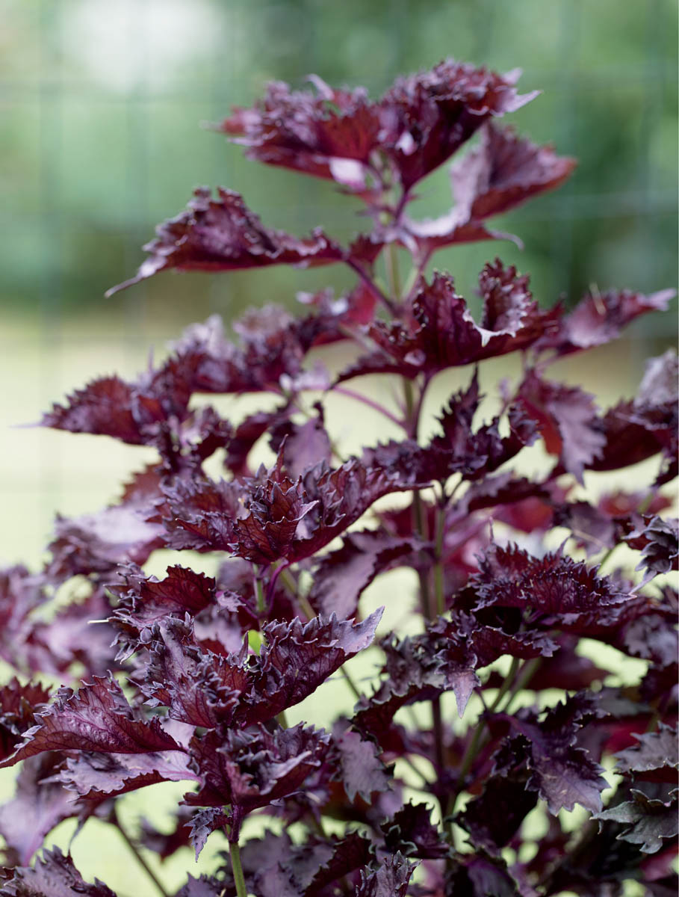
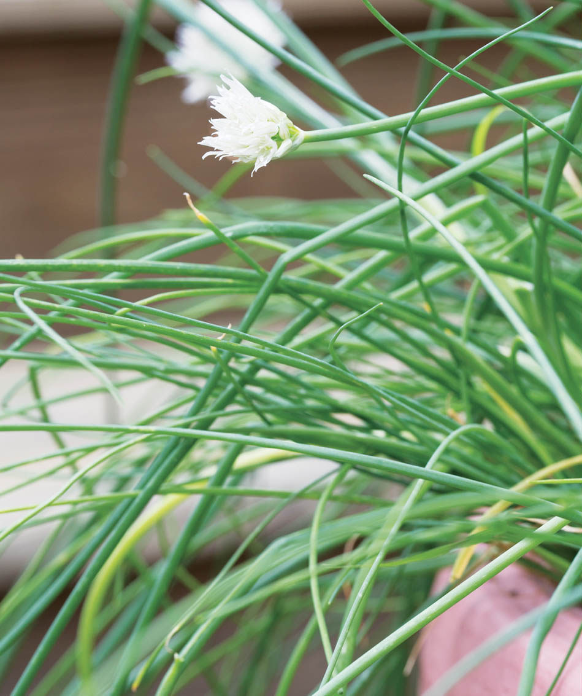
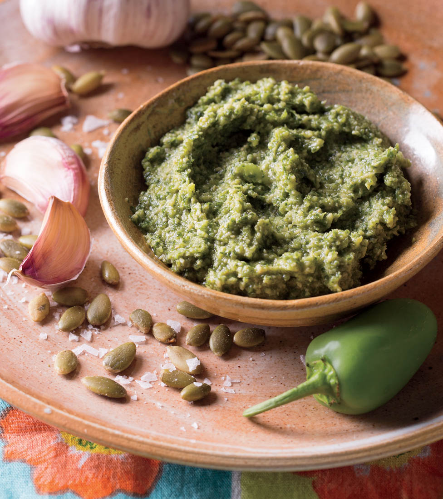

Richard Busch, potter and photographer, who created my garden of raised beds, whose wonderful bowls and plates are featured in many of the recipes, and who made my beautiful year-round “She Shed,” a garden den where I am able to escape and write uninterrupted for hours on end.
As a lover of traditional pesto since the time of my first introduction at Chez Roberto’s in Geneva, Switzerland, my perception of what pesto can be has changed significantly over the last 45 years. I grow many herbs and vegetables and cook dinner almost every night, so I often make pestos with whatever is at hand. The constant ingredients are herbs, oil, and garlic, but many variables are at play: I make pestos with or without nuts and with a variety of types of cheese — or sometimes no cheese at all. Not all of my pestos or pastes even fall into the savory category. Some herbs work well in sweet pastes and purées mixed with fruits, nuts, dairy, and even chocolate.
Many factors influence what you might add to your own personal pesto. These include where you live and the season; which fresh herbs and greens you are able to grow, harvest, or purchase year-round; and whether you can find local ricotta, goat cheese, or fresh mozzarella, or whether you make your own. There is no end to the dishes that can be enhanced by a dollop of pesto. I stir pesto into risotto and other grain dishes, combine it with beans and chickpeas, spoon it over soup, drizzle it over slices of fresh mozzarella and tomatoes, rub it over meats and poultry, stuff it under the skin of chicken before roasting, and serve it alongside seafood.
Herbs and young greens can form the backbone of your pesto. Besides basil in its many varieties, there are so many leaves begging to be used — think spinach, kale, watercress, arugula, cilantro, tarragon, bronze fennel, perilla, mint, and even nasturtium leaves and pea shoots. You can incorporate immature chard, beet, and kale leaves (no tough mature leaves, please), carrot tops, and celery leaves. Other savories include garlic scapes, garlic chives, ramp leaves and bulbs (ramsons), shallots, scallions, chives, thyme, rosemary, sage, lemon balm, and a range of mints. The list goes on and on — you need only look at your garden’s bounty, local farmers’ markets, or your CSA baskets.
As for nuts, I love to use universal favorites such as pine nuts, walnuts, pecans, hazelnuts, pistachios, almonds, peanuts, and cashews. My favorite seeds include sunflower, pumpkin, and sesame. Many types of cheese are possible candidates for my pestos. Parmesan, of course, because it is so flavorful and nutty. But you might also consider feta, goat, blue cheeses, and even some of the fantastically aged and nutty cheddars from Ireland, Wales, and Scotland.
Rather than some of the heavier extra-virgin olive oils, I prefer those that have milder fruit and buttery flavors, whether they come from California, Italy, Greece, Spain, or Tunisia. I also like to add grapeseed oil to cut the heaviness of some olive oils. And to add another layer of flavor and depth, you could include a little pumpkin seed oil, butternut squash seed oil, or avocado oil.
To keep leaves and flavors bright, I often add a light and somewhat sweet vinegar — “sweet” meaning that they are not mouth-puckeringly acidic. I favor white and red balsamic vinegars, rice vinegar (plain or seasoned), and sometimes apple cider or sherry vinegars. Harsh wine vinegars are not on my list; it must be a mellow champagne variety or have some sweetness on the tongue.
So there you have it. You can make pestos, pastes, and purées from just about anything. I try to keep a few jars of various pestos and purées in my refrigerator at all times. Most last two to four weeks and even longer if they contain salt and vinegar. These little jars of greens, garlic, and oil are often my lifesavers at the end of a busy day. Even if I don’t have a jar in the refrigerator, it hardly takes any time to throw a few ingredients into a food processor, and I can smear the resulting purée over something to pop under the broiler or in a grill pan, or toss it with greens or grains. Such instant flavor for such little work — pestos are so very rewarding.
Chapter 1
A Universal Tradition
Pestos, pastes, and purées are ancient recipes made around the world with greens and herbs, garlic and spices, seeds and nuts, oils, and other ingredients depending on a country’s agriculture and cuisine. Today, chefs and cooks everywhere are creating pestos from spinach, kale, arugula, peppers, tomatoes, and whatever else they are growing in their kitchen gardens, in containers on decks and patios, and indoors in hydroponic gardens. And of course, it’s easy to find an abundance of fresh herbs and greens at farmers’ markets and most supermarkets.
One of the most familiar pestos originated in Genoa, Italy, in the province of Liguria. Made from basil, pine nuts, garlic, olive oil, Parmigiano-Reggiano and/or Pecorino Romano cheeses, pesto Genovese is a traditional Italian sauce for dressing pasta. It is also delicious with fish, meats, vegetables, soups, and breads.
Basil was introduced to Mediterranean countries via the ancient spice routes from India. It was possibly used by the Romans, who ground a mixture of herbs, cheese, and garlic into a paste called moretum. Italians in Liguria adapted the Roman cheese and garlic dish to include the basil and pine nuts that grew profusely on their hillsides. Using their local olive oil, they ground everything together into pesta, which comes from pestare, meaning “to pound or crush in a mortar with a pestle.” In 1863, Giovanni Battista Ratto provided what is believed to be the first modern recipe for pesto in his book La Cuciniera Genovese.
Pesto is very regional in Italy. In Calabria, pesto alla calabrese consists of roasted bell peppers, garlic, black pepper, basil, cheese, and olive oil. Pesto rosso, from Sicily, is red from the addition of tomatoes and from using just a little basil. Gremolata or gremolada is a thick paste made from chopped parsley, lemon zest, and garlic, sometimes with the addition of olive oil, breadcrumbs, anchovies, and Pecorino Romano cheese. It is the traditional accompaniment to osso buco alla Milanese (braised veal shank, although lamb shanks are interchangeable).
Out of Italy
Other countries have their own version of pesto. In nearby Provence, the French version is pistou, a combination of basil, parsley, crushed garlic, and grated cheese. Pistou is used as an accompaniment to soupe au pistou, a hearty vegetable soup not unlike the Italian minestrone soup, which is also often adorned with pesto.
Spain has romesco — a red paste of romesco chile peppers processed with tomatoes, sweet red peppers, pine nuts, garlic, and olive oil. In Germany they make a pesto from the flat elliptical leaves of ramsons, a wild garlic that grows rampantly in moist pastures in many European countries and in southern regions of the United States.
In Peru there is a dish called tallarines verdes or “green noodles,” named after Italian tagliarini pasta with green pesto. The green color is enhanced by the inclusion of spinach, although they may use vegetable oil instead of olive oil and other nuts in place of expensive imported pine nuts.
In the nineteenth century Genovese immigrants to Argentina introduced pesto recipes to their new homeland, where chimichurri evolved in the form of chopped parsley, oregano, garlic, olive oil, and wine vinegar. In Brazil, the Portuguese have a paste called tempero, which they use as a basic seasoning for many cooked dishes. Tempero combines onions, leeks, garlic, basil, and parsley with a large quantity of salt but no oil. The salt allows the paste to keep under refrigeration for at least one year.
In Singapore, an Italian-Peranakan version called laksa pesto includes curry. Anyone who loves Indian food has surely ordered tandoori chicken; tandoori paste is a blend of curry spices, onion, garlic, chiles, ginger, and yogurt. Thailand is famous for its red and green curry pastes. The ingredients for both are almost identical except the red is made with hot red chiles while the green contains spicy green chiles. Harissa paste, a fiery Mediterranean pesto made with mint, parsley, cilantro, garlic, olive oil, and dried cayenne peppers, reigns in North Africa. Unlike French and Italian pestos, harissa does not contain nuts or cheese.
In most Thai and Mexican restaurants, you will find some kind of thick sauce containing peanuts or almonds, sesame or pumpkin seeds, peppers, garlic, and oil, though no cheese or basil. Mexican pipian is a ground or puréed mole sauce. Containing vegetable oil, onions, pumpkin seeds (pepitas), peanuts, sesame seeds, chile peppers, garlic, spices, and herbs, it is a traditional condiment or marinade for chicken, pork, seafood, and vegetable dishes. Pipian verde, a green variety, contains tomatillos and green peppers. When not diluted with too much liquid, the result is a thick pesto-like sauce. And like any pesto or paste, pipian can be used as a rub for meats before cooking and, when thick enough, creates a crust that helps seal in the juices. Like Italian pesto, you can find Mexican moles in some supermarkets but both are at their best when made fresh.
A Pesto Is a Paste Is a Purée
It all comes down to the fact that depending on the country, the region, and the cook, a pesto is a paste is a purée. It’s just a matter of how much liquid is added to the mixture — whether that liquid is oil or vinegar, fermented fish sauce or soy sauce, juice or broth, or even the purest liquid of all, water.
The beauty of pestos, pastes, and purées is that they can be made by anyone, even those who don’t enjoy cooking. Throw fresh herbs with garlic, spices, oil, and some cheese or tofu into a food processor, and you have a quick topping for pizza, pasta, couscous, fish, chicken, or whatever you fancy. Sweet pestos are just as easy and make a delicious and unusual accompaniment to pancakes, tarts, pastries, waffles, and ice cream.
Even if you don’t have space for a large garden, most people can find the room to grow a few potted herbs on a patio or balcony. Supplement your own bounty with produce from farmers’ markets and supermarkets, which sell living herbs and a great range of fruits, nuts, greens, cheeses, and other ingredients. The recipes in this book can be made for vegetarians as well as omnivores. Many are made without gluten, or don’t contain nuts or cheese. And some of the cheeses included are soft cheeses like ricotta or goat cheese, which may be suitable for people who are sensitive to hard cheeses.S
The Basic Ingredients
Create your own combinations using whatever you have growing or find at the farmers’ markets. While you’ll find many ideas in this book to get you thinking, the Classic Genovese Pesto is a good ratio to follow.
Greens and Herbs
In a traditional pesto recipe, you can substitute one, two, or even three cups of different greens and/or herbs for the same amount of sweet basil leaves. Experiment with combinations of arugula, spinach, baby kale, tender chard, mint, tarragon, bronze fennel, cilantro, lemon basil, Thai basil, thyme, scallion greens, chives, sage, oregano, rosemary, or whatever rocks your taste buds. Pluck a handful of chickweed before it goes to flower and add it to the equation — it is amazingly tender and tasty, and certainly plentiful, at least in my backyard. When adding the stronger-tasting herbs like rosemary, sage, thyme, and tarragon, start with 1⁄4 cup and add more to taste.

One of my favorite herbs for pesto is perilla.
Cheese
You can use hard grating cheeses, such as Asiago, Pecorino Romano, Cotija, Manchego, aged Gouda, or aged cheddar, in place of the Parmesan (Parmigiano-Reggiano or Grana-Padano). Welsh Collier’s Powerful and Scottish Mull of Kintyre cheddars are two of my favorites because of their almost granular texture and lovely nutty flavor.
Oil
Olive oil is a great flavor enhancer as well as being one of the healthiest oils on the planet. I use extra-virgin olive oil because it has been cold pressed without chemicals. You can also find grapeseed and canola oils that have been extracted without chemicals and heat. Start with 1⁄2 cup and increase to 3⁄4 cup to make a creamier pesto to taste.
You can reduce the quantity of oil by substituting up to half the amount with a nut milk. For the most part, nut milks are not strongly flavored and they offer more mouthfeel and thickness than broth or water.
Garlic
I love garlic, so I use at least four large cloves when making almost any pesto. Besides adding a powerful burst of taste, garlic contains allicin and diallyl sulfides, both of which are medically endorsed as being effective in the management of blood pressure and cholesterol levels. Some garlic varieties are spicier and have more bite than others. Older bulbs lose their firmness and are not as strong or spicy. If they are beginning to sprout, you can split them in half and zip out the green germ, though I don’t find a little germination to be a problem so I leave it intact.
If you prefer a milder, less assertive taste, you can roast the garlic first. Rather than turning on my oven, I like to split the bulb apart into cloves and roast them, unpeeled, in a dry skillet (I favor cast iron) over medium heat for 10 minutes or low heat for 20 minutes, until somewhat soft. Stir the cloves around once in a while so that they don’t burn. When cool, remove the skins and continue with your recipe. Or drop peeled cloves into a skillet with a little water and cook over medium-low heat for 3 to 5 minutes. Cool before proceeding with the recipe.
Nuts
Some nuts taste good when raw, while others improve with a little toasting. I like to use unroasted walnuts, almonds, pecans, pine nuts, hazelnuts, and coconut chips, but I prefer to roast sunflower seeds, pumpkin seeds, cashews, pistachios, and peanuts. They are just more toothsome that way, and fortunately, you can buy them already roasted. If they are salted, cut back on the salt to be added to your recipes.
However, all nuts and seeds develop a deeper flavor and more crunch when toasted or roasted. You can dry-roast nuts and seeds in a skillet over medium-low heat for two to three minutes, stirring occasionally to avoid scorching. The best way to toast skin-on whole nuts such as hazelnuts and almonds is to arrange them in single layer on a baking sheet and bake at 350°F (180°C) for 10 minutes. The skins will begin to peel away during baking; before using the nuts in a recipe, remove the skins by wrapping the nuts in a clean dish towel and rubbing them vigorously until the skins drop off.
Salt and Pepper
Salt and pepper are important additions, but the amount you add is up to you. I like to use coarse sea salt and whole black pepper freshly milled. About 35 turns of the mills makes approximately 1⁄2 teaspoon. That makes it really easy to just grind the salt and pepper right into the food processor or skillet. Some mills are set at a fixed coarser grind, so you might want to do a test measurement of the ones you use the most.
Enhancing and Brightening Flavors
Sometimes when you taste your finished pesto, paste, or purée, your taste buds may want a little something extra. When I ask my cooking students to do a taste test of what they are making, sometimes they say more salt is in order, or less citrus or vinegar, or a little more sweetness. When that happens, I suggest that either they brighten the flavor with a little lemon or lime juice before adding more salt or they lift up the acidity with a little honey, which tempers the flavor without having to add more oil.
One of the best gifts to humankind is honey flavored from a variety of plants. If I don’t have honey from my own hives, I buy it locally. I am also happy to use organic agave or maple syrup. Like a squeeze of citrus juice, a touch of sweetness can elevate a pesto or purée to the most delicious heights.
A tablespoon or two of water also lightens or thins without changing the flavor.
Storing Extra Quantities
Recipes containing oils and vinegars can, as a rule, be stored in jars in the refrigerator for at least two weeks. Truth be told, I have stored many pestos, herbal oils, and vinaigrettes for up to one month and no one has ever complained. If the vinaigrette tastes stronger than it did when I made it, I use it as a marinade instead of a dressing for delicate greens.
Pestos made with greens, herbs, oils, garlic, nuts, and cheeses can also be frozen. I do this by spooning two to four tablespoons into small plastic containers with tight-fitting lids. Frozen pesto will remain fresh for up to six months. You can thaw it in the refrigerator overnight or at room temperature in about two hours or less. Small quantities like this defrost quickly and are convenient to add to individual pasta servings or to any recipe that would benefit from a pop of fresh herbal flavors.
A Word about Equipment
Most chefs and home cooks have embraced food processors for the ease with which they can slice, dice, grind, purée, and mix almost any kind of food in a matter of minutes. A food processor may lack a Zen quality in the preparation of food, but you can still control the resulting texture, ranging from chunky to smooth. However, some old-school chefs and cooks prefer to use a mortar and pestle, the original tool for grinding pestos, sauces, meal, and medicines.
The Traditional Mortar and Pestle
Made from granite, marble, rock, earthenware, and even wood, the mortar is one of the most primitive tools used for crushing various foods and seasonings. The ingredients are placed in the mortar bowl and are ground or pounded with the small club- or mushroom-shaped pestle. Used throughout the world, the mortar and pestle ranges from the rustic stone Thai krok used to pulverize spices and the fibrous ingredients so common in Thai cuisine to a rough Mexican version for making pipian nut and seed pastes and mole sauces. Both pieces of the krok are traditionally hand-carved with hammer and chisel from a solid piece of nonporous granite. The Mexican molcajete (mortar) and tejolote (pestle) are made from porous black volcanic rock, which must be soaked in water, dried, and seasoned with salt and spices before use.
Granite and marble are particularly suited to grinding fibrous and strong-flavored ingredients because these hard stones don’t absorb flavors. The more irregular surface of granite is better than the smooth surface of marble, which doesn’t grab the herbs and other ingredients, thus making for a longer crushing experience. Wood absorbs flavors and needs to be designated for related recipes if used with garlic or potent herbs. In some Mediterranean countries ceramic and earthenware are also used. However, mortars made from pottery are not as heavy or resistant to pounding as marble and granite, so usually a wooden pestle is used to crush or bruise herbs.
The ceramic suribachi and wooden surikogi have been used to prepare Japanese food for centuries. The mortar is made from fired earthenware, which is glazed on the outside and ridged on the inside. The ridges make it much easier to grind sesame seeds and other ingredients, and the wooden pestle doesn’t wear down the ridges or crack the bowl.
Food Processors
Any of these recipes can be made using the traditional mortar-and-pestle method. However, I prefer using a food processor — large or small depending on the quantity I am making — for basil and other tender greens, especially at the end of the day when I want to put something on the table quickly. I recommend using one for making basil pesto in particular, because basil leaves quickly darken when subjected to rough bruising and I like to end up with a bright rather than dull green paste.
Some food processors do a better job of chopping the garlic with salt before the rest of the ingredients are added. Other food processors successfully grind all the ingredients when they are added all at the same time. One thing I have found with several of my smaller mini processors is that if, after processing and tasting, I decide I want more garlic and I add a clove at the end, that last wretched clove does not get chopped. That’s why I add the garlic to the food processor bowl first. Once you understand the vagaries of your food processor, you can adjust your mixing methods.
One of my favorite mini-processors is the two-cup Ninja (it will actually hold three cups). I can throw all the ingredients into the bowl and it will grind them with a few long pulses. Shorter pulses are in order when a coarser texture is desired. The five-cup Ninja is ideal for handling four to five cups of herbs and ingredients. When processing, it helps to scrape down the sides of the bowl periodically to keep the coarser parts at the bottom.
Making Pestos
Traditional and Beyond
Chapter 2
The Basil Basics
Classic Genovese Pesto
About 21⁄2 cups
Traditional pesto, which originated in Genoa, is most flavorful when made with Genovese basil. Other varieties providing that good Italian pesto flavor include Valentino and Napolitano, a large-leaved, full-flavored champ. Frilly Lettuce basil has huge leaves that at maturity are just as powerfully flavored.
Ingredients
3–4 large cloves garlic
Sea salt and freshly ground black pepper
1⁄3 cup pine nuts or chopped walnuts
1⁄2 cup freshly grated Parmesan cheese
3 packed cups basil leaves
1⁄2 cup olive oil (more for a thinner pesto)
2 tablespoons softened butter, cut into small chunks
Instructions
Place the garlic and salt and pepper to taste in the food processor and pulverize. Add the nuts and cheese and process until finely combined. Add the basil leaves, pressing lightly down into the container if necessary, and pour the olive oil over them. Process until thoroughly combined, then add the butter and process until the pesto is smooth.
Thai Basil Pesto
About 2 cups
Living in a multicultural region in northern Virginia, I can buy Thai basil at several large Asian supermarkets when I don’t have it in the garden. If you don’t have access to Thai basil, which tastes like a spicy basil flavored with anise and cinnamon, substitute cinnamon basil or any other type. Non-seeding, dark green Columnar basil is also a good choice due to its strong spicy flavor.
I also frequently make this recipe with cilantro because I love it and have a self-seeded patch that comes up very early in spring. By July it has already bolted in our summer heat, but by that time the basil is doing well.
Ingredients
4–5 large cloves garlic
1⁄2 teaspoon sea salt
1⁄2 teaspoon freshly ground black pepper
1⁄4 cup shelled pistachios or walnut or pecan halves
1⁄2 cup freshly grated or shredded Parmesan cheese
2 cups Thai basil leaves and tender stems
3⁄4 cup olive oil
1 tablespoon rice vinegar or lemon juice
Instructions
Process the garlic, salt, and pepper in a food processor or wide blender until relatively smooth. Add the nuts, Parmesan, basil, oil, and vinegar, and continue processing until the pesto is nearly smooth.
Herb-Feta Pesto
About 21⁄2 cups
Spread this tangy pesto on toasted bagels or bread and top with thinly sliced avocado and tomato. It’s also delicious dolloped on roasted vegetables, or as a flavorful addition to a dish of chickpeas. I use a mix of annual herbs and greens such as cilantro, basil, arugula, spinach, and parsley — or whatever else is growing in my garden.
Ingredients
4 large cloves garlic
1⁄2 teaspoon sea salt
1⁄2 teaspoon freshly ground black pepper
3 cups mixed herbs and greens
3⁄4 cup olive oil
1⁄4 cup sour cream or plain Greek yogurt
1⁄2 cup crumbled feta cheese
Instructions
Process the garlic, salt, and pepper in a food processor or a wide blender until relatively smooth. Add the herbs, oil, sour cream, and feta, and process until there are no big chunks. Add a little more oil or sour cream to taste.
Spicy Tomato Summer Pesto
About 21⁄2 cups
This recipe is inspired by the state of my late summer garden: overgrown with too many tomatoes, a ton of jalapeños, and an abundance of basil begging to be harvested before it goes to seed. I favor the sweeter yellow cherry tomatoes, particularly Sun Gold, but if I have too many red ones, I will use those instead (when paired with purple basil, the result is an all-red pesto). I sometimes cut up a small yellow squash (peeled) or zucchini and add it to the mix.
I pour this thick sauce over pasta; stir it into cannellini beans, chickpeas, barley, or farro; and use it to dress tabbouleh or couscous salads.
Ingredients
2 cups packed basil leaves
1⁄2 cup parsley leaves or small purple perilla leaves
11⁄2 cups halved cherry tomatoes (yellow or red)
2 jalapeño peppers (red or green), seeded and roughly chopped
4 large cloves garlic
1⁄2 cup freshly grated or shredded Parmesan, Romano, or Pecorino cheese
1⁄2 cup olive oil
Sea salt and freshly ground black pepper
Instructions
Place all the ingredients in a food processor and pulse until coarsely ground, scraping down the sides of the bowl as necessary.
Anchovy-Basil Pesto
About 13⁄4 cups
There are several Italian purées that incorporate a good number of anchovies into the mix. This is a similar to a warm bagna cauda sauce, which does not include basil. Serve this pesto with raw or cooked vegetables and good crusty bread. I also love it over chicken and pork and tossed with hot pasta.
Ingredients
4–6 large cloves garlic
4 tablespoons butter, sliced
1⁄2 cup olive oil
1 (2-ounce) tin anchovies in oil (10 anchovy fillets), drained
Freshly ground black pepper
1 tablespoon lemon juice
1 cup parsley leaves
1 cup basil leaves
Instructions
Cook the garlic, butter, and oil in a small skillet or saucepan over medium-low heat until the garlic softens, 2 to 3 minutes. Process the garlic mixture with the anchovies, pepper to taste, and lemon juice in a mini food processor until well combined. Add the parsley and basil and process until smooth or to desired consistency, scraping down the sides of the bowl as necessary.
Sundried Tomato and Almond Pesto
About 2 cups
The sundried tomatoes add a sweet intensity to this pesto. Spread it on crackers and toasted breads or combine it with an equal amount of cream cheese and twice as much liquid to make a sauce for pasta dishes. Sometimes I spread it over pie dough before adding a filling so that the crust doesn’t get soggy. Like many pestos, it makes a good substitute for melted butter when mixing a crumb crust.
Ingredients
1 cup basil leaves
1⁄2 cup parsley leaves
1⁄2 cup slivered almonds
1⁄2 cup chopped oil-packed sundried tomatoes
1⁄4 cup freshly grated or shredded Parmesan cheese
3⁄4 cup olive oil
2 large cloves garlic
1 tablespoon lemon juice
Sea salt and freshly ground black pepper
Instructions
Place all the ingredients in a mini food processor and process until nearly smooth, scraping down the sides of the bowl as necessary.
Ricotta and Garden Greens Pesto
About 11⁄2 cups
This pesto is the perfect way to use baby chard, kale, spinach, or romaine lettuce greens that need thinning. Young beet greens are also a good option. Mature chard, kale, or beet greens can be tough, so avoid leaves that are bigger than your hand. Adding basil or cilantro will give the pesto a good sweet flavor; however, you might want to add a bit of honey, too, if the garden greens lack sweetness.
Ingredients
1 cup immature garden greens
1 cup packed basil leaves or cilantro leaves with tender stems
1⁄2 cup snipped chives or scallions (green part only)
1⁄2 cup walnut halves, toasted if desired
1⁄3 cup ricotta cheese
2⁄3 cup olive oil
1–3 teaspoons honey
4–5 large cloves garlic
Sea salt and freshly ground black pepper
Instructions
Place all the ingredients in a mini food processor and process until nearly smooth, scraping down the sides of the bowl as necessary. If the texture seems a little thick, add up to 2 tablespoons of lemon juice or water.
Brazilian Tempero Purée
About 5 cups
My friend Leslie Solitario, who spent a few years in Brazil with her husband, Tomas, invited me to join her in making her annual supply of this incredibly potent, highly salted purée. “Bring goggles,” she instructed. “You will cry.” I have adapted her recipe enough that goggles aren’t necessary.
Use this tempero as a base for marinades or a starter seasoning for cooking vegetables, meats, grains, and beans. Start out by adding 1⁄2 to 1 tablespoon as a flavoring agent for marinades or to sauté ingredients. You can always add more — just don’t add extra salt.
Ingredients
3 cups parsley leaves
3 cups basil leaves and tender stems
1 large yellow or white onion, peeled and cut into chunks
10 fat scallions (include both white and green parts), roughly sliced
40 large cloves garlic (about 5 bulbs), peeled
1 cup coarse sea salt
Instructions
Place all the ingredients in a large food processor and pulse to combine. When combined, process until smooth, scraping down the sides of the bowl as necessary. Spoon into glass jars and store in the refrigerator for up to 1 year.
Basil-Tarragon Purée
About 2 cups
I am always happy to see my tarragon pushing up early in the spring, having survived another winter. By summer it is in full force and ready to combine with the basil. Plant or purchase flavorful French tarragon, rather than the much blander Russian variety. French tarragon is bursting with licorice flavor so a little goes a long way, but by all means add a little more to this recipe if you want a more pronounced flavor.
Tarragon complements meats, poultry, and seafood. And, of course, basil complements most dishes in the universe; you can make syrup and even ice cream with it.
1 tablespoon balsamic glaze or pomegranate molasses
Instructions
Place all the ingredients in a mini food processor and process until smooth or to desired consistency, scraping down the sides of the bowl as necessary.
Chapter 3
Expanding the Herbal Palate
Herb-Scallion Pesto
About 2 cups
This great pesto goes with just about anything. The addition of roasted eggplant and chickpeas (see variation below) turns it into a hearty spread that is delicious as an appetizer or side dish.
Ingredients
1 cup basil (lemon, cinnamon, or ruby) leaves and very tender stems
1⁄2 cup parsley leaves
1⁄2 cup cilantro leaves and tender stems
1 green jalapeño pepper, seeded and sliced
3 scallions (include both white and green parts), roughly sliced (about 3⁄4 cup)
4 large cloves garlic
1⁄2 cup cashew or walnut halves (optional)
1⁄2 teaspoon sea salt
1⁄2 teaspoon freshly ground black pepper
1⁄2 cup olive oil
1⁄2 cup reduced-fat olive oil mayonnaise
Instructions
Place all the ingredients in a food processor and process until nearly smooth, or to your desired consistency.
Eggplant, Bean, and Herb–Scallion Pesto Spread
About 21⁄2 cups
Serve this variation on slices of fresh crusty artisan bread or wedges of toasted pita. Top with chopped or sliced tomatoes or cucumbers as desired.
Cooking the eggplant in the microwave is quicker, but it’s well worth taking the time to fire up the grill and cook it whole until charred and collapsed, about 20 minutes. Or oven-roast it at 400°F (200°C) for about 45 minutes.
Ingredients
1 large Italian eggplant (about 11⁄4 pounds)
1 (15-ounce) can cannellini beans or chickpeas, drained and rinsed
1 cup Herb-Scallion Pesto (above)
Sea salt and freshly ground black pepper
Instructions
Wash the eggplant, prick it in a few places, and place in a microwave-safe dish. Microwave uncovered on high for 10 minutes, until collapsed. Set aside to cool.
Tip the beans into a food processor and pulse to chop. Scrape the cooled eggplant flesh into the beans and process to combine. Add the pesto and salt and pepper to taste and pulse to desired consistency. If the beans are pasty, add a little lemon juice or olive oil.
Rosemary Pesto
About 1 cup
I love the flavor of rosemary with lamb, chicken, and pork and in bean soups. This pesto is wonderful any time of year, but especially just before the cold weather hits the basil plants, which are one of the first tender herbs to succumb. I find that my Arp variety of rosemary thrives year-round in Virginia. Hill Hardy is another reliable variety. I don’t recommend using dried rosemary in this recipe.
Ingredients
1⁄2 cup fresh rosemary leaves, removed from the sprigs
3 large cloves garlic
1⁄2 cup walnut halves
1⁄2 cup olive oil
1–2 tablespoons Dijon mustard or a spicy alternative like chipotle mustard
Sea salt and freshly ground black pepper
Instructions
Place all the ingredients in a mini food processor and process until smooth or to desired consistency, scraping down the sides of the bowl as necessary.
Ginger-Peanut Pesto
About 2 cups
This pesto’s mildly Asian flavor goes well with seafood and pork and chicken dishes, especially grilled or broiled kabobs. You can buy dry roasted peanuts or toast your own raw peanuts. Extra salt is unnecessary because of the fish sauce. I like cilantro as the base herb, but if you don’t care for it, you can swap in basil instead.
Ingredients
2 packed cups cilantro or basil leaves and tender stems
3 large cloves garlic
2- inch piece gingerroot, peeled and sliced
1⁄4 cup roasted unsalted peanuts
1⁄8 teaspoon ground cayenne, ancho, or chipotle powder
1⁄2 cup olive, canola, or grapeseed oil
2 tablespoons lime juice
2 tablespoons fish sauce
1 tablespoon honey
2 tablespoons sesame oil
Sea salt and freshly ground black pepper (optional)
Instructions
Place all the ingredients in a mini food processor and process until smooth or to desired consistency, scraping down the sides of the bowl as necessary.
Moroccan Chermoula
About 11⁄2 cups
Widely used in Moroccan dishes, this North African paste has a nice little kick to it. Sometimes made from a medley of ground whole spices and garlic, which makes it more suitable for a rub or stirring into a cooked sauce, chermoula is a favorite for lamb and chicken dishes but is also delicious with pork, tuna, and shrimp. For a milder version, replace the red pepper flakes with sweet paprika and a pinch of ground cayenne pepper.
Ingredients
1 cup cilantro leaves and tender stems
1⁄2 cup parsley leaves
1⁄2 cup mint leaves
3 large cloves garlic
1 tablespoon coriander seeds
1 tablespoon toasted cumin seeds or 1 teaspoon ground cumin
1 tablespoon red pepper flakes and seeds, or 1 dried red chile, stemmed and crumbled
1⁄2 teaspoon sea salt
3⁄4 cup olive oil
Instructions
Place all the ingredients in a mini food processor and process until smooth or to desired consistency, scraping down the sides of the bowl as necessary. If you think your food processor won’t pulverize the coriander and cumin seeds, grind them in a spice grinder first.
Mint Pesto
About 2 cups
This mint-packed but slightly salty pesto is perfect for coating a lamb roast. It also makes a flavorful accompaniment for grilled mackerel. Or serve it with raw, steamed, or roasted vegetables such as carrots, cauliflower, and fennel.
Ingredients
11⁄2 cups mint leaves
1 cup parsley or cilantro leaves and tender stems
1⁄4 cup pine nuts or 1⁄3 cup walnut halves
1⁄4 cup crumbled feta cheese or freshly grated Parmesan cheese
3 large cloves garlic
1⁄2 cup olive oil
Sea salt and freshly ground black pepper
Instructions
Place all the ingredients in a food processor and pulse until nearly smooth.
Parsley-Fennel Pistou
About 11⁄2 cups
This traditional French pesto, made with basil and parsley, is often served with or on top of a bowl of vegetable soup. I love using fennel fronds in addition to the other herbs for an unusual twist. I grow bronze fennel, which does not develop a bulb but produces lots of top frond growth similar to dill but with a stronger flavor.
Ingredients
3–4 large cloves garlic, cut in half
3⁄4 cup parsley leaves
3⁄4 cup basil leaves
1⁄2–3⁄4 cup fennel fronds, to taste
1⁄2 cup freshly grated Parmesan cheese
1⁄2 cup olive oil
Sea salt and freshly ground black pepper
Instructions
Place all the ingredients in a mini food processor and process until nearly smooth or to desired consistency.
Olive, Thyme, and Parsley Pesto
About 2 cups
Toss this pesto with chickpeas, cannellini beans, or roasted eggplant and serve with grilled chicken thighs for a Mediterranean-flavored dinner. It also makes a good topping for burgers, flat iron steaks, or filet mignons, and I like to spread it on grilled naan or bake it on pizza dough.
Ingredients
11⁄2 cups pitted Kalamata olives
3⁄4 cup parsley leaves
1⁄4 cup capers, drained and rinsed (if packed in salt)
1⁄4 cup dried tomatoes in oil
3 large cloves garlic
2–4 tablespoons thyme leaves
1⁄2 teaspoon hot paprika or freshly ground black pepper
1 teaspoon grated lemon zest
1 tablespoon lemon juice
1⁄4–1⁄3 cup olive oil
Sea salt (optional; olives and capers may be salty)
1 tablespoon honey (optional)
Instructions
Place all the ingredients in a mini food processor and process until nearly smooth or to desired consistency.
Goat Cheese, Yogurt, and Lemon Pesto
About 2 cups
This pesto adds a vibrant flavor to grilled chicken salad, a platter of crisp-steamed or grilled vegetables, a cut of lamb, or just about any kind of seafood. If the yogurt is particularly tart, add 1 tablespoon of honey or add only 1 tablespoon lemon juice.
Ingredients
1⁄2 cup parsley leaves
1⁄2 cup cilantro or mint leaves
1⁄4 cup lemon thyme leaves
1⁄4 cup roughly snipped chives or scallions (green part only), or 1⁄4 sweet onion, sliced
1⁄2 cup crumbled goat cheese or feta (plain or herbed)
1⁄4 teaspoon ground ancho or chipotle powder, or 1⁄2 teaspoon freshly ground black pepper
4 large cloves garlic
Sea salt
1⁄2 cup plain Greek yogurt (2% or whole)
1⁄3 cup olive oil
1 tablespoon honey (optional)
2 tablespoons lemon juice
Instructions
Place all the ingredients in a food processor and process until smooth or to desired consistency, scraping down the sides of the bowl as necessary.

Peanut-Cilantro Pesto
About 11⁄2 cups
This pesto makes a delicious dipping sauce for Japanese gyozas and other dumplings, spring rolls, and Fresh Summer Rolls. I also use it to accompany seafood and drizzle over vegetables.
Ingredients
1 cup cilantro leaves
3 large cloves garlic
1 -inch piece gingerroot, peeled and sliced
1⁄4 cup roasted unsalted peanuts
1⁄2 cup peanut butter, chunky or smooth
1⁄3 cup rice vinegar
1⁄3 cup lukewarm water
1–2 tablespoons fish or oyster sauce
1 tablespoon mirin, honey, or agave
Instructions
Place all the ingredients in a mini food processor and process until smooth or to desired consistency, scraping down the sides of the bowl as necessary. Add more water (a tablespoon at a time) if you prefer a thinner sauce.
Arugula-Parsley Chimichurri
About 11⁄2 cups
This Argentinian purée is traditionally served with grilled meats as a dressing, after they’re cooked, but it’s also a great marinade for flat iron or flank steaks. I find it to be quite wonderful on tuna steaks or tuna burgers (I like them seared on the outside and fairly rare inside). It adds a pop of flavor to shrimp dishes and livens up scallops. I also use it as a topping for gazpacho.
Ingredients
11⁄2 cups small arugula leaves (chop if using larger mature leaves)
1 cup parsley leaves
1⁄4 cup tarragon leaves
3 large cloves garlic
1 fresh red or green jalapeño or serrano pepper, seeded and chopped
1⁄2 teaspoon sea salt
1⁄2 teaspoon freshly ground black pepper
1⁄2 cup olive oil
2 tablespoons balsamic or sherry vinegar
Instructions
Place all the ingredients in a mini food processor and process until smooth or to desired consistency, scraping down the sides of the bowl as necessary.
Chapter 4
Pushing the Pesto Envelope
Pepitas and Chile Salsa Verde
About 11⁄4 cups
Pepitas, or hulled pumpkin seeds, are available roasted and salted. If you use salted ones, taste the pesto before adding salt. If you purchase raw pepitas, toast them for a couple of minutes in a skillet over medium heat to bring out their flavor. You can substitute sunflower seeds if you prefer them.
Serve this tangy sauce with simple poached chicken breasts, roasted vegetables or potatoes, or a salad of avocado and goat cheese.

Ingredients
11⁄2 cups parsley or cilantro leaves and tender stems
1⁄2 cup pepitas, roasted or toasted
1 green jalapeño, serrano, or other chile pepper, seeded and roughly chopped
2 scallions (include both white and green parts), sliced
3 large cloves garlic
1⁄2 teaspoon sea salt
1⁄2 cup olive, canola, or grapeseed oil
2 tablespoons lime juice
Instructions
Place all the ingredients in a blender or mini food processor and process until smooth or to desired consistency, scraping down the sides of the bowl as necessary.
Herb and Breadcrumb Gremolata
About 1 cup
Classic Italian gremolata — parsley, garlic, olive oil, and lemon — is often stirred into soups and stews, particularly osso bucco, which traditionally is made from veal shanks, though I make it with lamb shanks. My favorite variation involves adding breadcrumbs as well as other herbs from my garden, such as mint and cilantro.
Serve it with lamb, chicken, seafood, or grilled or roasted eggplant. I have also used it as a stuffing for butterflied pork loin or portabella mushrooms, or as a topping for broiled mussels or tender littleneck clams on the half shell.
Ingredients
1⁄2 cup cilantro leaves and tender stems
1⁄2 cup parsley leaves
2 tablespoons mint leaves
4 large cloves garlic
1 large slice fresh whole-grain oatmeal or whole-wheat bread, crust included, torn into pieces (about 1 cup fresh breadcrumbs)
Zest of 1 lemon
1 tablespoon lemon juice
3⁄4 cup olive oil
Instructions
Place the cilantro, parsley, mint, garlic, and bread in a mini food processor and process until finely chopped. Add the lemon zest, lemon juice, and olive oil, and pulse until combined.
Fresh Green Harissa
About 21⁄2 cups
This spicy paste mimics the flavor of traditional harissa made from dried red chiles, but it uses up some of those extra chile peppers, especially jalapeños, that many gardeners find themselves with. My hot pepper plants seem to be more prolific every year. If you like spicy food, this will hit the spot as a seasoning for meats, rice, grains, and many other dishes. If you like things really fiery, substitute red chiles.
Ingredients
2 cups cilantro leaves and tender stems
2 cups small arugula leaves (slice larger mature leaves)
3 medium tomatillos, husked, stemmed, and quartered
2 large scallions (include both white and green parts), sliced
4–6 hot green chiles (such as jalapeños), seeded and roughly chopped
4 large cloves garlic
1⁄2 teaspoon sea salt
1⁄2 cup olive oil
2 tablespoons rice vinegar or mellow white wine vinegar
Instructions
Place all the ingredients in the bowl of a food processor and process until smooth or to desired consistency, scraping down the sides of the bowl as necessary. Add more olive oil if needed.
Spinach-Arugula Pesto
About 3 cups
This pesto pairs well with poultry, seafood, and meat. I also use it for meatier vegetarian dishes with umami flavors, such as broiled portabella mushrooms or grilled eggplant. For a milder version, substitute Parmesan for some of the Romano cheese, which has a more assertive flavor. To keep the color of the pesto brighter, I recommend using white balsamic vinegar.
Ingredients
1 cup baby spinach leaves
1 cup packed baby arugula leaves
1⁄2 cup parsley leaves
1⁄2 cup packed basil leaves
3⁄4 cup ground Romano or Parmesan cheese (or a mixture)
1⁄2 cup walnut halves
5 large cloves garlic
1⁄2 teaspoon sea salt
1⁄2 teaspoon freshly ground black pepper
1 cup olive oil
1 tablespoon white balsamic or rice vinegar
Instructions
Place all the ingredients in the bowl of a large food processor and process until nearly smooth.
Red Pepper and Walnut Purée
About 2 cups
More of a purée than a pesto, this combination is wonderful spooned over fish, salad greens, vegetables, and grains such as couscous, quinoa, and rice. For a delicious light supper, try it over savory waffles.
Ingredients
2 medium red bell peppers, roasted and peeled
1⁄4 cup walnut halves
1 cup basil leaves
3–4 large cloves garlic
1⁄4 cup sliced scallions (green part only)
1⁄2 cup olive, canola, or grapeseed oil
2 tablespoons apple or orange juice
2 tablespoons buttermilk or half-and-half
1 tablespoon honey
Sea salt and freshly ground black pepper
Instructions
Place all the ingredients in the bowl of a food processor and process until nearly smooth.
Tomatillo-Sunflower Salsa Verde
About 2 cups
I love tomatillos so I grow way too many each year, always afraid that they won’t do well or some creature will eat them. When neither of those things happen, I make a big batch of this salsa verde. I like to serve it with beans, eggs, chicken, or fish.
Ingredients
4 medium tomatillos, husks and stems removed, roughly chopped
1 cup cilantro leaves and tender stems or basil leaves
1⁄3 cup shelled roasted sunflower seeds
3 large cloves garlic
2 jalapeños, seeded and cut up
1⁄2 cup sliced scallions (include both white and green parts)
1⁄2 teaspoon sea salt
1⁄2 teaspoon freshly ground black pepper
1⁄2 teaspoon ground cumin
1⁄3 cup olive, canola, or grapeseed oil
2 tablespoons mild vinegar (white balsamic, apple cider, or rice) or lime juice
Instructions
Place all the ingredients in a food processor and pulse until nearly smooth or to desired consistency.
Peanut-Sesame Pesto
About 21⁄2 cups
This is one of my favorite flavor combinations; I use it on chicken, flank steak, pork, tofu, and, of course, noodles. My favorite sesame noodles are served cold and topped with sliced scallions and cucumber. Cook 8 ounces of Asian noodles or thin linguine and rinse in cold water before tossing with 1 cup of pesto — rinsing the noodles prevents them from becoming gummy. These keep well, so I often make extra for leftovers.
Ingredients
1 cup basil leaves
1⁄2 cup cilantro leaves and tender stems
1⁄4 cup snipped chives or thinly sliced scallions (green part only)
4–6 large cloves garlic
1⁄4 cup roasted unsalted peanuts
2- inch piece gingerroot, peeled and sliced
1⁄2 cup peanut butter, chunky or smooth
1⁄2 cup warm water
1⁄2 cup low-sodium soy sauce
1⁄4 cup rice vinegar
1⁄4 cup sesame oil
1⁄4 cup tahini paste
1 tablespoon honey or sweet chili sauce
Instructions
Place all the ingredients in a food processor and process until smooth or to desired consistency, scraping down the sides of the bowl as necessary. Add more sesame oil, honey, or soy sauce to taste.
Poblano and Fresh Oregano Purée
About 21⁄4 cups
One New Year’s Eve in Puerto Rico, I enjoyed a delicious pork dish with a mildly spicy sweet pepper paste, which was quite potent even without the heat of hot peppers. There it was made it with an herb called culantro (racao), which has a flavor of cilantro but is much stronger and not as sweet. Substitute parsley if you don’t like cilantro, but the fresh oregano is a key ingredient.
This is a good marinade rub for pork or chicken thighs. I also like to stir it into black beans.
Ingredients
11⁄2 cups cilantro leaves and tender stems
1⁄2 cup fresh oregano leaves
1 poblano or bell pepper, seeded and roughly chopped
2 tablespoons white wine vinegar or apple cider vinegar
Instructions
Place all the ingredients in the bowl of a food processor and process to form a thick purée.
Fennel-Chive Herb Butter
About 1 cup
Some compound herb butters are very closely related to herb pestos. They can contain the same ingredients that make up a pesto, but most pestos do not contain any butter and some compound butter recipes don’t contain any oil. As far as using them, most herb butters and pestos are pretty much interchangeable in many recipes.
Like pestos, herb butters can be made with various herbs, garlic, cheese, citrus, nuts, and oil. Choose a favorite combination — fennel and chive, mint and chive, basil and cilantro, rosemary and chive, thyme and parsley — and mix it with butter, garlic, a little olive oil, and maybe some Parmesan for a great-tasting seasoning that takes a minute to make. I like this version spread on warm biscuits, and I often melt a couple of tablespoons for cooking chopped vegetables for a risotto or to drizzle over chicken before pan- or oven-roasting.
Ingredients
1⁄2 cup snipped fennel fronds
1⁄4 cup snipped chives
1⁄4 cup parsley leaves
2 tablespoons freshly grated Parmesan cheese
2 large cloves garlic
1⁄2 teaspoon sea salt
1⁄2 teaspoon freshly ground black pepper
1⁄2 cup (1 stick) butter, sliced
2 tablespoons olive oil
Zest of 1 lemon
1 tablespoon lemon juice
Instructions
Place all the ingredients into a mini food processor and process until smooth or to desired consistency, scraping down the sides of the bowl as necessary. Spoon into a bowl, cover and refrigerate until ready to use. Or roll the butter into a log in wax paper and chill, then cut off portions as needed.
Sweet Pepper, Almond, and Chive Romesco
About 11⁄2 cups
Spanish romesco is a wonderful purée that I have enjoyed on my visits to various regions of Spain. There are a number of regional versions. Most are based on rehydrated ancho peppers or roasted sweet peppers, ripe tomatoes, and almonds; many contain breadcrumbs.
This easy Catalan version is made with almonds as well as bread. Spoon it over chicken, fish, or soup, or use it as a topping for grilled bread, romaine, or eggplant (see the recipe Eggplant with Gremolata Topping).
Ingredients
1 (1⁄2-inch-thick) slice French, Italian, or artisanal bread torn into small pieces (about 1 cup fresh breadcrumbs)
1⁄2 cup blanched almonds or toasted hazelnuts with skins rubbed off
4 large cloves garlic
1⁄2 cup parsley leaves
1 medium-large red bell pepper, roasted, skinned, and roughly chopped (see here for roasting instructions, or use commercial roasted peppers)
2 large tomatoes, roughly chopped
2 tablespoons red wine vinegar, sherry vinegar, or balsamic vinegar
1 teaspoon Spanish paprika
1⁄2 teaspoon sea salt
1⁄2 teaspoon freshly ground black pepper
3⁄4 cup olive oil
Instructions
Place the bread, nuts, garlic, and parsley in a food processor and process until finely ground. Add the roasted pepper, tomatoes, vinegar, paprika, salt, and pepper, and purée until nearly smooth. With the motor running, add the oil in a stream and process until smoothly combined.
Chapter 5
Herbed Oil Purées, Mayonnaises, and Vinaigrettes
Herbed Oils: Even Easier Than Pesto
Besides making pestos and pastes year-round from my backyard herbs and greens, I also purée herbs with oil, salt, and pepper to make a basic seasoning. These oil purées are often my lifesavers at the end of a busy day. All I have to do is heat the flavored oil in a skillet, add some sliced garlic, scallions, and a sweet pepper or tomatoes, and I have a base for a stir-fry. I also use these oil purées as a simple marinade.
My usual ratio is 2 cups of herbs to 1 cup of olive oil with 20 to 30 twists from my sea salt and black pepper mills. Sometimes I make a thinner version by upping the oil by 1⁄2 cup. I may use a single herb, or I’ll combine compatible flavors, such as cilantro and basil; mint and parsley; mint and basil; cilantro and parsley; or sage and thyme (in this case, 1⁄2 cup sage leaves and 1⁄2 cup thyme leaves to 1 cup of oil is a strong enough combination for me). Use your harvests and taste buds as your guide.
These pureés are solid in the refrigerator but soon liquefy at room temperature. I find it convenient to store a batch in several small containers so that I can use them one at a time, rather than having to “thaw” a larger jar. My 2-cup Ninja processor does the best job of turning a simple oil-herb combination into a smooth purée. Its chopper is equipped with four small blades, which perform much more efficiently than a large single blade chopper.
Note: To play it safe, I do not add garlic to these simple oil and herb purées because, according to researchers at the University of California at Davis, adding only oil to garlic can trigger the growth of botulism spores if they were present in the soil in which the garlic bulbs were grown. The addition of acidity, in the form of vinegar or citric acid, kills off any threat of botulism, so storing puréed garlic in a pesto, paste, or vinaigrette is okay, especially if refrigerated. It’s simple enough to add minced or sliced garlic to whatever dish you’re making with one of these oils.
Basil-Cilantro Oil
About 11⁄2 cups
This versatile combination makes a lovely, robustly flavored oil, especially if you use large, mature basil leaves or a particularly pungent basil variety such as Thai or the dark green nonflowering Columnar (sometimes marketed as “Greek”). Drizzle it over meats destined for the grill or broiler, add 2 to 4 tablespoons to potato salad, or use it for sautéing.
Ingredients
1 cup packed basil leaves
1 cup packed cilantro leaves
1⁄2 teaspoon sea salt
1⁄2 teaspoon freshly ground black pepper
1 cup extra-virgin olive oil or expeller-pressed grapeseed or canola oil
Instructions
Place all the ingredients in a blender or food processor and process until smooth or to desired consistency, scraping down the sides of the bowl as necessary. Pour into glass jars and refrigerate. Use within 1 month for freshest flavor.
Garlic Chive Oil
About 11⁄3 cups
To make a garlic-flavored oil purée without using garlic cloves, I use garlic chives, also known as Chinese garlic, which have flat spears rather than being hollow like regular chives, or I use ramps (ramsons). Because of their strong garlic taste, I like to combine them with another flavorful herb such as thyme, rosemary, or tarragon. If using only garlic chives, I prefer a ratio of 1 cup snipped flat leaves to 1 cup grapeseed or olive oil, which results in about 1 cup purée.
Ingredients
1 cup garlic chives or ramps
1 cup thyme, rosemary, tarragon, or another herb
1⁄2 teaspoon sea salt
1⁄2 teaspoon freshly ground black pepper
1 cup extra-virgin olive oil or expeller-pressed canola or grapeseed oil
Instructions
Place all the ingredients in a blender or food processor and process until smooth or to desired consistency, scraping down the sides of the bowl as necessary. Pour into small glass jars and refrigerate. Use within 1 month for freshest flavor.
Fennel-Chive Oil
About 11⁄2 cups
I grow masses of bronze fennel because it’s beautiful (the leaves turn bronze as they mature) and I prefer the flavor. So do the spice-bush swallowtail caterpillars, but I have plenty to share. Bronze fennel has an assertive flavor that can dominate a mild salad dressing, but a tablespoon will perk up a cup of mayonnaise used to serve with fish. I drizzle a tablespoon or two into a pan to cook shrimp or chicken, or I toss it with bland pasta. Substitute dill if you prefer.
Ingredients
1 cup fennel leaves
1 cup roughly snipped chives
1⁄2 teaspoon sea salt
1⁄2 teaspoon freshly ground black pepper
1–11⁄2 cups extra-virgin olive oil or expeller-pressed grapeseed or canola oil
Instructions
Place all the ingredients in a blender or food processor and process until smooth or to desired consistency, scraping down the sides of the bowl as necessary. Pour into glass jars and refrigerate. Use within 1 month for freshest flavor.
Mayonnaise-Based Purées
Some of my thick vinaigrette purées contain mayonnaise. While I lean toward using commercial olive oil–based mayonnaise in my classes, I often make my own mayonnaise from eggs laid by my free-ranging chickens. Whether commercial or homemade, this emulsified gem is wonderful for adding a creamy texture to pestos and thickening vinaigrettes.
You can use mayonnaise to replace all or some of the oil or butter in recipes, thus lowering the fat content but still providing a rich flavor. I sometimes also use it to replace butter in biscuits. Mayonnaise is the base for French classics such as aioli, remoulade, and rouille. Famous American mayonnaise-based purées include Green Goddess and Thousand Island dressings and tartar sauce.
Basic Homemade Mayonnaise
About 1 cup
You can turn 1 cup of mayonnaise into a range of flavored purées and pestos. A simple combination of herbs and garlic is delicious. Mayonnaise spiked with garlic, ground chile or cumin, fresh ginger, or sweet chili sauce has become ubiquitous on many restaurant menus. I like to make it with sweet and hot chile pastes as well as fresh herbs like cilantro, chives, basil, or tarragon. Or mix plain mayonnaise with an equal amount of your favorite pesto to make a creamy green spread.
Ingredients
2 egg yolks
2 teaspoons Dijon mustard
2 tablespoons lemon juice, white wine vinegar, or white balsamic vinegar
1⁄2 teaspoon sea salt
1⁄8 teaspoon ground white pepper (optional)
1 cup olive or grapeseed oil
Instructions
1. Place the egg, mustard, lemon juice, salt, and white pepper (if using) in the bowl of a food processor or blender. Process on high until blended, 20 to 30 seconds.
2. With the motor running, drizzle in the oil slowly at first, increasing to a continuous steady stream until all the oil has been incorporated and the mayonnaise is smooth and has formed a thick emulsion.
3. Scrape into a container, refrigerate, and use within 1 week.
Green Mayonnaise
About 2 cups
This herb-and-nut-filled mayonnaise is a good accompaniment for seafood, chicken with salad greens, couscous, rice, or steamed cauliflower, broccoli, or asparagus.
Ingredients
1 cup parsley leaves
1⁄4 cup fresh thyme or tarragon leaves
1⁄4 cup snipped chives
1⁄4 cup chopped walnuts or 1⁄3 cup walnut halves
2 large cloves garlic
Sea salt and freshly ground black pepper
1 cup mayonnaise
2 tablespoons olive oil
Instructions
Place all the ingredients in a mini food processor and process until smooth or to desired consistency, scraping down the sides of the bowl as necessary.
Anchovy-Tarragon Mayonnaise
About 13⁄4 cups
This creamy mayonnaise is a riff on warm Béarnaise sauce, in which egg yolks are whipped into melted butter, vinegar, and tarragon. This recipe is much simpler and is also good without the anchovies, although I love the umami flavor they add. There are 10 anchovy fillets in a 2-ounce can, so I save the remaining ones in a small jar for another use (pizza, salad, mashed with sour cream for boiled potatoes). I serve this with steak, on a wedge salad, and over steamed vegetables — broccoli never tasted so good.
Ingredients
5 anchovy fillets in oil, drained
1⁄4 cup tarragon leaves
1⁄2 cup freshly grated or shredded Parmesan cheese
4 large cloves garlic
1⁄2 teaspoon sea salt
1⁄2 teaspoon freshly ground black pepper
3⁄4 cup homemade or commercial olive oil mayonnaise
1⁄4 cup Dijonnaise*
1⁄4 cup lemon juice
*Or use 2 tablespoons Dijon mustard and increase the mayonnaise to 1 cup.
Instructions
Place all the ingredients in a blender or mini food processor and process until smooth or to desired consistency, scraping down the sides of the bowl as necessary.
Rouille
About 11⁄2 cups
I still remember the first time I had this thick, spicy paste. I was young, in Marseille, and had never tasted lobster bouillabaisse. The soup was redolent with herbs and the rouille became a spicy mouthful when stirred into my bowl. It was a far cry from the bland steamed lobsters with drawn butter I had dined on previously. I’ve rarely had real bouillabaisse since, but I do occasionally make a seafood ragout and serve it with rouille.
Ingredients
1 large or 2 medium slices oatmeal, whole-wheat, or artisanal bread, torn into pieces
4 large cloves garlic
1⁄4 cup olive oil mayonnaise
1⁄4 cup olive oil
1⁄2 teaspoon sea salt
2 tablespoons lemon juice
1 jalapeño or serrano pepper, seeded and roughly chopped
2 medium red or yellow bell peppers, roasted, skinned, and roughly chopped (see here for roasting instructions, or use commercial roasted peppers)
Instructions
Place the torn bread in a mini food processor and process until rough crumbs form. Add the garlic, mayonnaise, olive oil, salt, lemon juice, jalapeño, and roasted peppers, and process until smooth and thick. If it seems too thick (this will depend on the bread used), thin with 1 tablespoon of water, lemon juice, or olive oil.
Avocado Mayonnaise
About 11⁄2 cups
This is a vegan alternative to egg mayonnaise, with the creamy avocado replacing the egg and much of the oil. Hass avocados are meatier and more flavorful than the larger, somewhat watery Florida avocados. If the Hass avocados are not perfectly ripe, you may want to add an extra 2 tablespoons olive oil. Or microwave them on medium for about 1 minute to soften them.
Ingredients
2 ripe Hass avocados or 1 large ripe Florida green avocado, pitted and peeled
1⁄4 cup olive oil
1 tablespoon lemon juice
1 tablespoon Dijon mustard
1⁄2 teaspoon sea salt
1⁄2 teaspoon freshly ground black pepper
Instructions
Place all the ingredients in a bowl and whip smooth with electric beaters or process smooth in a mini food processor.
Sweet and Spicy Aioli
About 11⁄4 cups
Garlic mayonnaise, or aioli, is a staple in France as well as Spain, where it is called allioli and is sometimes made with the addition of cooked apple purée to accompany pork.
I particularly like to serve aioli with seafood and shellfish. This version is quite spicy, so start with 1 teaspoon of the hot chili garlic paste. I sometimes switch out the hot chili paste in favor of wasabi paste. Buy wasabi as a paste or make your own with 1 tablespoon wasabi powder and 1 teaspoon water.
Ingredients
1⁄2 cup cilantro leaves and tender stems
1⁄2 cup basil leaves
3 large cloves garlic
1–3 teaspoons hot chili garlic paste
2 tablespoons sweet chili sauce
1 cup homemade or commercial olive oil mayonnaise
Instructions
Place all the ingredients in a mini food processor and process until smooth or to desired consistency, scraping down the sides of the bowl as necessary.
Four Simple Vinaigrettes
These vinaigrettes can pass as pestos or purées because they are packed with enough herbs to make you feel like you are getting an extra serving of greens with your meal. They are flexible, so use whatever combination of herbs pleases your palate. To make them, place all the ingredients in a mini food processor and process until smooth or to desired consistency, scraping down the sides of the bowl as necessary.
Toss them with salad greens, drizzle them over raw or roasted vegetables, or work them into a wide variety of dishes such as grains, chickpeas, couscous, tabbouleh, fish, meat, and poultry.
Herb Vinaigrette
About 1 cup
Ingredients
1⁄2 cup dill or fennel fronds
1⁄2 cup basil or cilantro leaves
2 tablespoons fresh oregano leaves
2 tablespoons tarragon leaves
4 large cloves garlic
1⁄2 cup olive oil, plus extra to thin as desired
Zest of 1⁄2 lemon
2 tablespoons lemon juice
1 tablespoon Dijon mustard
1 tablespoon honey
Sea salt and freshly ground black pepper
Mint, Miso, and Shallot Vinaigrette
About 11⁄2 cups
Ingredients
1 cup mint leaves
3 large cloves garlic
1 medium shallot, sliced
1⁄2-inch piece gingerroot, peeled and thinly sliced
3⁄4 cup olive or grapeseed oil
1⁄4 cup rice vinegar or white balsamic vinegar
2 tablespoons white or yellow miso
2 tablespoons water
2 tablespoons mirin, honey, or agave
Sea salt and freshly ground black pepper
White or yellow miso is milder and sweeter than red miso. You can also find low-sodium miso. If your miso is salted you will not need to add salt.
Honey-Mustard Vinaigrette with Perilla
About 2 cups
Ingredients
1 cup basil leaves
1⁄4 cup perilla or mint leaves
1⁄4 cup snipped chives
4 large cloves garlic
1⁄2 teaspoon sea salt
1⁄2 teaspoon freshly ground black pepper
1⁄2 cup homemade or commercial olive oil mayonnaise
1⁄4 cup olive oil
1⁄4 cup white balsamic vinegar or rice vinegar
1 tablespoon grainy-style mustard
2 tablespoons honey
Green Herb and Mango Vinaigrette
About 13⁄4 cups
Ingredients
1 packed cup annual herbs (mix of mint, chives, basil, or any garden herbs)
1⁄2 cup diced mango
4 large cloves garlic
3⁄4 cup olive oil
Juice of 1 orange (about 1⁄4 cup)
1⁄4 cup rice vinegar or champagne vinegar
1 tablespoon mirin or honey
Sea salt and freshly ground black pepper
Cooking with Pestos
Chapter 6
Salads and Soups
Mesclun Greens with Avocado, Tomatoes, and Olives
4 servings
To turn this salad into a main meal, add roasted or grilled chicken. Vegetarians may want to increase the quantity of chickpeas and include the boiled eggs as well. (Photo: here)
Ingredients
6–8 cups young greens (kale, arugula, spinach, beet greens, or romaine)
1 small zucchini, cut in half lengthwise and thinly sliced (optional)
1⁄2 small fennel bulb, julienned (optional)
Instructions
1. Place the greens in a large shallow bowl or a deep platter. Spoon 4 tablespoons of the purée over them and toss to combine. Spread the greens out over the dish.
2. Arrange the chickpeas, tomatoes, avocado, olives, and zucchini and fennel, if using, in concentric circles or lines over the greens. Drizzle a little purée over the salad components and serve with the remaining purée on the side.
Chickpea, Apricot, and Olive Salad
4–6 servings
With its flavors of mint, cumin, and red pepper flakes, the chermoula complements the Turkish–Middle Eastern combination of chickpeas, apricots, and olives. I love to eat this salad as a main meal spooned over grains along with the greens included in the recipe. To stretch it into a main meal for four people, add a third can of chickpeas. (Photo: here)
Ingredients
2 (15-ounce) cans chickpeas, drained and rinsed
1 cup soft dried apricots, diced
1 cup pitted olives, cut in half
1 cup (about 5) thinly sliced scallions (include both white and green parts)
4–6 cups young salad greens or shredded romaine or cabbage
1⁄2 cup chopped or halved pistachios
Instructions
1. Combine the chickpeas, apricots, olives, and scallions in a serving bowl and toss with 1⁄2 cup of the chermoula. (Use another 1⁄4 cup chermoula if adding extra chickpeas.)
2. Place the greens in a large shallow bowl and toss with 2 to 4 tablespoons of chermoula.
3. Spoon the chickpea mixture over the top and sprinkle with pistachios. Serve with any extra chermoula on the side.
Beet and Orange Salad with Goat Cheese and Pecans
4–6 servings
A salad with mixed vegetables and fruits often takes the place of a warm vegetable dish at my table. Beets and oranges are among my favorite combinations and avocado appears on my table just about every night.
Ingredients
6 cups salad greens (arugula, spinach, kale, romaine, or a mixture of choice)
Julienned Fennel, Radish, Asian Pear, and Radicchio
4 servings
Serve this salad as a crunchy slaw to accompany burgers, kabobs, lamb, chicken thighs, or portabella steaks. Small white turnips or apples can replace the Asian pear.
Ingredients
1 fennel bulb, with the base of the hard core and any rough outer leaves removed
1. Prepare the fennel, radishes, Asian pear, and radicchio by slicing and cutting into julienne strips. Do this on a mandoline, in a food processor, or by hand.
2. Toss each ingredient separately with 1 to 2 tablespoons of the vinaigrette.
3. Arrange the ingredients in separate piles on a large platter. Serve extra vinaigrette on the side.
Spring Greens with Snap Peas, Asparagus, and Mangos
4–6 servings
Use any young salad leaves you prefer. Bibb and Boston lettuce are also good choices. Add quartered boiled eggs for a heartier salad. (Photo: here)
Ingredients
1 bunch young asparagus, tough bottom portion snapped off, sliced into 2- to 3-inch lengths
1. Bring a pot of water to a boil and drop in the asparagus and snap peas. Boil until crunchy tender, about 2 minutes, or to preference. Tip the asparagus and peas into a colander in the sink and run cold water over them to chill and keep them bright green.
2. Place the salad greens in a large shallow bowl or platter. Toss with 1⁄4 cup of the vinaigrette. Arrange the asparagus and snap peas around the edges and the mango and tomatoes in the center. Drizzle with 1⁄4 cup of the vinaigrette and sprinkle with mint. Serve with the extra vinaigrette on the side.
Chunky Chickpea Soup
4–6 servings
Cannellini beans also work well in this recipe, either in place of or in combination with the chickpeas. For a heartier soup, garnish with cooked, crumbled sausage and sliced black Kalamata olives.
Ingredients
2 tablespoons olive oil
1 large onion, chopped
8 cloves garlic, minced
2 teaspoons ground cumin
1 teaspoon garam masala or 2 teaspoons spicy hot paprika
1⁄2 teaspoon sea salt
1⁄2 teaspoon freshly ground black pepper
4 (15-ounce) cans chickpeas, drained and rinsed
1 (19-ounce) can chunky crushed tomatoes or whole tomatoes, chopped
1. Warm the oil in a 4- to 5-quart saucepan over medium heat. Add the onion, garlic, cumin, garam masala, salt, and pepper, and cook, uncovered, for 5 minutes.
2. Stir in the chickpeas, tomatoes, and broth, and cook, covered, for 10 minutes.
3. Add the parsley and 1⁄4 cup of the pesto, stir to combine, and simmer, covered, for 10 minutes.
4. Crush most of the chickpeas with a potato masher or use an immersion blender until chunky. Taste and adjust the seasonings, and add an extra cup of broth (or water) as desired. Continue to simmer for 10 to 15 minutes.
5. Serve with focaccia and the remaining pesto for spooning on the bread or into the soup.
White Bean and Orzo Soup with Spicy Summer Pesto
6–8 servings
Instead of orzo, use rice, barley, or small elbow pasta. Substitute chickpeas for the white beans. A soup made from any of these bland flavors benefits from the addition of a spicy pesto.
Ingredients
11⁄2 cups orzo
1 tablespoon olive oil
1 medium onion (red or yellow), diced
4 large cloves garlic, minced or crushed
1⁄2 teaspoon sea salt
1⁄2 teaspoon freshly ground black pepper
3 (15-ounce) cans white cannellini beans, drained and rinsed
5–6 cups vegetable or chicken broth
Juice and grated zest of 1 lemon
1⁄4 cup snipped chives or thinly sliced scallions (green part only)
1. Cook the orzo according to the package directions, drain, and set aside.
2. Heat the oil in a large saucepan over medium heat. Add the onion, garlic, salt, and pepper, and cook until the onion is soft, about 5 minutes.
3. Add the beans with 3 cups of the broth and the lemon juice. Bring to a boil, reduce the heat to medium-low, and simmer for 5 minutes.
4. Use a hand immersion blender to purée the beans directly in the pan. Or place the bean mixture in a food processor or blender and purée until coarse or chunky, as desired, then return the mixture to the saucepan. (You may need to do this in two batches.)
5. Stir in 2 cups of the broth. Return to a simmer over medium heat and, when hot, stir in the orzo. If desired, add the remaining cup of broth.
6. Stir in the lemon zest and chives. Spoon the soup into bowls and top each portion with a tablespoon of pesto. Serve the remaining pesto at the table.
Cauliflower-Cheese Soup with Pistou and Garlic Naan
4–6 servings
This soup is very flavorful even without cooking the vegetables in oil first. The potato and puréed vegetables create a thick soup that does not require the addition of flour. I serve it with broiled naan, which I often make from scratch. It is also available commercially, or you could serve any favorite bread.
Ingredients
1 medium head cauliflower, broken into florets
1 large russet or yellow potato, peeled and thinly sliced
1. Put the cauliflower, potato, onion, carrot, garlic, broth, curry powder, cumin, salt, and pepper in a 4- to 5-quart saucepan over medium heat. Cook until the vegetables are tender, about 20 minutes. Remove the pan from the heat and use an immersion blender to purée.
2. Stir in the half-and-half and the cheese. Return the pan to low heat for 5 minutes if necessary to warm.
3. Preheat the broiler with a rack positioned 4 to 5 inches below the heat. Brush each piece of naan with the oil. Spread minced or crushed garlic over the top. Broil for 2 minutes, being careful not to burn them. Cut each naan into four pieces.
4. Spoon the soup into bowls and dollop 1 to 2 tablespoons of the pistou over the top. Serve with the hot garlicky naan and additional pistou at the table.
Late Summer Gazpacho
4 main servings or 8–10 appetizer servings
This spicy version of a traditional seasonal favorite is a quick and easy supper on a hot evening.
Place all the ingredients — adding only 1⁄4 cup of the spicy chimichurri — in a food processor and process until smooth. Pour the blended gazpacho into individual bowls and let each person add extra chimichurri at the table, as desired.
Chapter 7
Sides and Snacks
Herb Biscuits
18–20 biscuits
As with herb butters, these biscuits are wonderfully flexible, so you can substitute any fresh herb for the thyme (if you are using unflavored butter). I don’t recommend substituting dried herbs; the flavor just isn’t the same. For a slightly heartier biscuit, replace 1 cup of the all-purpose flour with white whole-wheat flour. (Photo: here)
Ingredients
4 cups all-purpose flour
1 tablespoon baking powder
1 teaspoon baking soda
1⁄2 teaspoon sea salt
1⁄2 teaspoon freshly ground black pepper (optional)
3⁄4 cup (11⁄2 sticks) unsalted butter
1⁄2 cup herb butter or 1⁄4 cup additional unsalted butter and 1⁄4 cup fresh thyme leaves*
11⁄2 cups buttermilk or whole milk
*If not using an herb butter, combine the thyme with the buttermilk before adding it to the flour mixture in step 4.
Instructions
1. Preheat the oven to 425°F (220°C). Line a baking sheet with parchment paper.
2. Combine the flour, baking powder, baking soda, salt, and pepper, if using, in a large mixing bowl.
3. Drop slices of unsalted butter and herb butter into the dry ingredients and cut them in with two knives, a mezzaluna, or a pastry blender, until the mixture forms coarse crumbs. (You could also use a food processor; pulse cautiously just until large crumbs form.)
4. Stir the milk into the flour mixture and mix until it forms a soft dough that pulls away from the sides of the bowl.
5. Place the dough on a lightly floured board and pat (do not knead) into a 3⁄4-inch-thick (no less) rectangle. Cut out 3-inch squares and arrange on the baking sheet — keep separated for crunchy biscuit exteriors or almost touching for softer biscuits. When cutting out the biscuits, cut straight down. Do not twist the cutter because that creates smashed edges, which do not allow the dough to rise properly.
6. Bake for about 15 minutes, or until lightly golden. Give thicker biscuits an extra minute or two, but don’t overbake.
Fresh Green Harissa with Beans and Cheese
8 servings
This is a very quick way to make a spicy frijoles y queso with whatever kind of beans you prefer. Serve in flour tortillas or with tortilla chips as an appetizer. It’s also good spooned over an omelet and topped with salsa.
Ingredients
1⁄2–1 teaspoon red pepper flakes or ground chili powder
2 (15-ounce) cans pinto or black beans, drained and rinsed
4 scallions (include both white and green parts), chopped
Instructions
1. Place the pepper flakes, beans, shredded cheese, cream cheese, milk, and 2 teaspoons of the flour in a 3-quart saucepan. Stir well. Cook over medium heat for 5 to 10 minutes, until hot and gooey, adding the remaining teaspoon of flour to stabilize as necessary.
2. Remove from the heat and stir in the pesto. Top with the scallions. Serve warm.
Sesame Garlic Fried Rice with Peanut-Cilantro Pesto
4–8 servings
This is a great dish to make with any kind of leftover cooked rice you happen to have on hand. I’ve used short-grain sushi rice and jasmine rice (brown or white), as well as quinoa. Serve as a side dish or top with cooked shrimp, tofu, or shredded omelet to turn it into an entrée.
1. Heat the grapeseed oil in a large skillet over medium heat. Add the garlic and cook until just light golden. Remove the garlic to a dish and set aside.
2. Add the sesame oil to the remaining grapeseed oil in the skillet. Swirl to coat and then add the cooked rice. Using a wooden spoon, stir the rice to loosen it and coat it in the oil. This will take about 3 minutes with this quantity of rice.
3. Combine the sake and the soy sauce and drizzle around the edges of the rice. Stir into the rice to coat. Cook until the rice is hot, 5 to 10 minutes.
4. Stir in 1⁄2 cup of the pesto. Remove to a bowl and sprinkle with the golden garlic and cilantro. Serve the extra pesto at the table.
Squash and Bell Pepper Caponata with Olive, Thyme, and Parsley Pesto
8 servings
Caponata is an Italian mélange of simmered peppers, zucchini, tomatoes, and eggplant with olives that is very similar to the French ratatouille. I have omitted the eggplant in this version simply because I use homegrown vegetables and I have been unable to grow eggplant with organic practices. (Flea beetles devour the leaves.)
The Olive, Thyme, and Parsley Pesto replaces chopped olives, herbs, and nuts. Serve warm as a side dish or at room temperature with toasted or crusty bread for an appetizer. (Photo: here)
Ingredients
2 tablespoons olive oil
1 medium red onion, roughly diced
2 medium bell peppers, quartered lengthwise and sliced 1⁄2 inch thick
2 large cloves garlic, thinly sliced
3 medium zucchinis, halved lengthwise and sliced 1⁄2 inch thick
1. Heat the oil in a large skillet over medium heat. Add the onion and bell peppers, cook for 5 minutes, and then add the garlic and zucchini. Stir and cook for 5 minutes. Stir in the tomatoes, raisins, capers, and vinegar.
2. Cover the skillet and cook over low heat until the vegetables are soft but still hold their shape, about 20 minutes.
3. Remove from the heat and stir in the pesto to taste. Transfer to a serving dish and sprinkle with the pepper flakes. Serve at room temperature.
Broiled Tomatoes with Ricotta and Garden Greens Pesto
4–6 servings
Medium to large broiled tomatoes make a savory accompaniment to grilled or roasted meats, chicken, or fish. Serve a hearty country bread to sop up the juices oozing from the warm tomatoes and pesto. If you have a glut of cherry tomatoes, cut them in half and broil those instead. If you don’t want to heat up the broiler, a bowl of cherry tomatoes cut in half and topped with pesto is a lovely cold appetizer on a hot summer day.
1. Preheat the broiler and place an oven rack about 5 inches below the heating element.
2. Cut the tomatoes in half, scoop out most of the seeds, and place cut side up on a baking sheet. Broil for 5 minutes. Remove from the oven and let cool for 5 minutes.
3. Spoon 1 tablespoon of the pesto into each tomato and top with 1 teaspoon panko.
4. Place the tomatoes back under the broiler for 3 to 5 minutes, until golden. Serve warm or at room temperature.
Roasted Beets and Brussels Sprouts with Herb-Feta Pesto
4–6 servings
I love beets and find they add sweetness to Brussels sprouts, which can be a tad bitter. Roasted cauliflower and shallots make another good combination to use in this recipe, as do potatoes, carrots, and garlic. To adapt this recipe to spring and summer favorites such as asparagus, snap peas, and green beans, steam the vegetables lightly, then finish them off in a very hot skillet with a little oil before tossing with the pesto.
Ingredients
6 medium beets
8 ounces Brussels sprouts
1⁄2 teaspoon sea salt
1⁄2 teaspoon freshly ground black pepper
1 tablespoon honey
2 tablespoons olive oil
6–8 slices bacon or pancetta, snipped into 1⁄4-inch pieces with scissors
1⁄4 cup dried cherries or cran-raisins, chopped (optional)
1⁄4 cup chopped pecans, walnuts, or pistachios (optional)
1. Precook the beets and Brussels sprouts. Place the beets in a microwave-safe dish with 1 tablespoon water. Cover with plastic wrap and microwave on medium-high for 10 minutes. Tip the beets into a colander and run them under cold water until cool enough to handle. Slip or peel off the skins. Cut into 1⁄2-inch-thick slices, and cut any large slices in half. While the beets are in the microwave, cook the sprouts in boiling water for 3 minutes. Drain in a colander and rinse with cold water.
2. Finish cooking the beets and sprouts. Preheat the oven to 400°F (200°C). Place the beets and sprouts on a large baking tray or roasting pan. Sprinkle with salt and pepper and drizzle with the honey and olive oil. Toss to combine, then spread out evenly on the pan. Roast for 15 to 20 minutes, or until tender.
3. While the vegetables roast, cook the bacon in a large skillet over medium heat until crisp, about 10 minutes.
4. Remove the vegetables from the oven and spoon into a shallow serving bowl. Sprinkle the bacon, dried fruit, and nuts over them. Spoon 1⁄4 to 1⁄2 cup pesto around the edges of the bowl, and serve extra pesto on the side.
Zucchini Fritters
6–8 servings
If you don’t fry up all the mixture at once, you can refrigerate it and cook more fritters another day. I prefer to grate the squash and onion separately in a food processor rather than with a hand grater. The pressure of hand grating tends to make the vegetables weep more than grating them with a food processor. A medium zucchini is 8 to 9 inches long and about 1 inch in diameter.
Ingredients
4 medium zucchinis or yellow summer squash, grated (peel tough-skinned yellows)
1 medium sweet or red onion, grated
2⁄3 cup all-purpose flour
3 eggs, beaten
2⁄3 cup shredded or grated Parmesan, Romano, or Provolone cheese (or a mixture of shredded hard cheeses)
1⁄2 teaspoon sea salt
1⁄2 teaspoon freshly ground black pepper
1⁄2 cup finely snipped fennel, cilantro, or basil leaves
2–6 tablespoons olive or canola oil, plus more as needed for frying
1. Place the zucchini and onion in a colander in the sink to drain for 15 minutes. Then press down with your hands to extract more liquid.
2. Combine the zucchini and onion with the flour, eggs, cheese, salt, pepper, and fennel in a large bowl, using your hands or a metal spoon.
3. Heat 2 tablespoons of the oil in a large skillet over medium-high heat. When hot, drop in spoonfuls of the zucchini mixture, about 1 tablespoon per fritter. As you drop in the mounds, flatten them a little so the fritters cook evenly. Cook until golden, 6 to 8 minutes on each side. (You will want to cook in three batches if only using a 12-inch skillet. Keep cooked fritters warm in a 200°F (90°C) oven on a baking tray lined with paper towels.)
4. Serve with the salsa verde and sour cream.
Grilled Greens with Romesco
4 servings
This is perhaps not the most common way to serve a salad, but greens with tightly closed, firm, crunchy leaves take very well to grilling — they become a little charred on the outside and warm on the inside. They can serve as the base for a warm wedge salad or be eaten unadorned as a side vegetable. However, I prefer to drizzle them with romesco or another pesto or vinaigrette purée. (Photo: here)
Ingredients
2 romaine hearts, 4 heads of radicchio, or 8 heads of Belgian endive, or a combination
1⁄4–1⁄2 cup herb oil purée or flavored olive oil (lemon or basil)
Sea salt and freshly ground black pepper
4 medium tomatoes, sliced (or 12 or more cherry tomatoes, halved)
1. Heat an outdoor grill or a large indoor grill pan over medium-high heat.
2. Cut the romaine, radicchio, and/or Belgian endive in half lengthwise. Drizzle each half with about 1 tablespoon of oil and season with salt and pepper to taste.
3. Place cut side down on the grill and cook for 5 minutes on each side, until lightly charred.
4. Leave the grilled greens as they are or slice each half into crosswise sections. Place on a serving platter and use as a base for the tomatoes, onion, and avocado. Spoon the romesco over all and sprinkle the cheese over the top.
Focaccia with Spicy Tomato Summer Pesto
8–12 servings
This easy bread comes together quickly. The rising time can be delayed in the refrigerator overnight, or you can speed it along by using a single rising. To do this, after mixing the dough, pat it immediately into the baking dish. Once it has risen to the top of the dish (about 45 minutes), spread it with pesto and pop it into the hot oven.
1. Place all the ingredients — except for the pesto — in the bowl of a food processor. Process on full power for 30 seconds to combine. Switch to pulsing and pulse for 2 minutes, until the flour is totally incorporated and the dough pulls cleanly away from the bowl. The dough should be smooth and elastic.
2. Remove the dough from the bowl and form into a ball. Place in a lightly oiled bowl and turn to oil the entire ball. Cover with plastic wrap and let rise in a warm place until doubled in size. This will take from 30 minutes to 1 hour, depending on the warmth of the environment.
3. Preheat the oven to 400°F (200°C) and lightly oil a 7- by 11-inch baking dish. Place the dough in the baking dish and push into the corners. If desired, make little indentations over the dough with the tips of your fingers. Spread with 1⁄2 cup of the pesto and let rest for 20 minutes.
4. Bake in the middle of the oven for 25 minutes, until the edges are golden. Remove from the oven and place on a wire rack to cool 10 minutes before cutting into 8 to 12 pieces right in the baking dish. Remove the pieces to a platter or bread board and serve with extra pesto.
Chapter 8
Pastas and Grains
Gnocchi
About 60 small gnocchi
Gnocchi are little Italian dumplings made with boiled potatoes and flour, and sometimes with ricotta and flour. They are very easy to make and can be a fun family project. Dropped into boiling water, they quickly rise to the surface and are then tossed into a hot skillet for a few minutes with oil, butter, or pesto. Serve them with more pesto or a mushroom or tomato sauce.
Ingredients
4 medium Yukon Gold or all-purpose white potatoes, peeled, quartered, boiled until tender, and cooled
1 cup all-purpose flour (can substitute gluten-free flour mixture)
1 teaspoon mixed dried herbs or oregano or 1⁄4 teaspoon ground nutmeg
1⁄2 teaspoon sea salt
1⁄2 teaspoon freshly ground black pepper
1 egg
1⁄4 cup sour cream or whole-milk plain Greek yogurt
1⁄4–1⁄2 cup freshly grated Parmesan cheese (optional)
Instructions
1. Press the cooled potatoes through a potato ricer or a food mill into a medium mixing bowl. Add the flour, herbs, salt, and pepper. Combine with a fork until the mixture is fluffy.
2. Beat the egg with the sour cream in a small bowl. Pour into the potato and flour mixture and stir until well combined.
3. Transfer the dough to a lightly floured cutting board or baking tray and pat into a 6- by 10-inch rectangle. (If the dough feels a little sticky, dust it lightly with flour.) Cut the dough into 1-inch-wide strips and then roll them to form rounded lengths measuring approximately 101⁄2 inches long. Cut each roll into 3⁄4- to 1-inch pieces. You should wind up with about 60 gnocchi.
4. Bring 4 to 5 quarts of water to boil in a large pot, then drop in about half the gnocchi so as not to overcrowd the pot. After about 5 minutes, the gnocchi will rise to the top. Remove with a slotted spoon and place on paper towels. Repeat with remaining gnocchi. (Frozen gnocchi can be cooked the same way but will take slightly longer to float.)
5. Warm a large skillet over medium heat. Drop 2 to 3 tablespoons of pesto into the hot skillet and spread to cover the bottom. Add enough gnocchi to cover the skillet and turn gently to coat. Cook until lightly golden, 3 to 4 minutes. Transfer to a serving bowl and repeat with remaining gnocchi, adding an additional tablespoon or two of pesto for each batch.
6. Spoon 1⁄4 to 1⁄2 cup pesto into a serving bowl, depending on the amount being served, and gently combine with the hot gnocchi. Sprinkle with Parmesan cheese, if using, and serve with remaining pesto on the side.
Spaetzle
4–6 servings
Swiss-German in origin, these little chunks of dough float like gnocchi or other dumplings when dropped into near-boiling water. They’re very easy to make and taste like fresh pasta. You can buy them in a dried form, but freshly homemade are better. (Photo: here)
1⁄2–1 cup freshly grated Parmesan or Romano cheese
Instructions
1. Combine the flour and salt in a mixing bowl. Beat the eggs and milk in a separate bowl. Pour the egg mixture into the flour mixture and whisk until smooth.
2. Bring 6 quarts of water to a near boil over medium heat and hold at a simmer. Don’t let it come to a full boil. Spoon the dough into a colander and, using the back of a large spoon or spatula, push the dough through the holes into the hot water. (You can also use a special spaetzle maker with a sliding pusher.)
3. Cook the spaetzle until they float to the surface, 2 to 3 minutes. If the pot is not large enough to take all the dough at once, cook them in batches, removing them with a slotted spoon to a clean colander.
4. When finished, pour out the cooking water and return the pot to the stove over low heat. Add the butter, oil, and salt and pepper to taste and stir to combine. Put the spaetzle back in the pot and toss gently to combine. Serve with grated cheese sprinkled over each serving or over the top of the spaetzle in a serving bowl.
Farfalle with Mozzarella and Anchovy-Basil Pesto
4 servings
We all have our favorite pasta shapes, and farfalle bows are one of mine. Twisted fusilli and orecchiette (little ear) also capture the pesto in their curves. If you are using a high-protein, high-fiber pasta, you will find that it absorbs pesto (and most sauces) more than regular wheat pasta. To compensate, serve extra pesto at the table or add a little extra pasta water to the sauce.
8 ounces mozzarella bocconcini, halved or quartered
1⁄4 cup toasted chopped walnuts, blanched almonds, or pine nuts
1⁄4 cup snipped chives or tiny (globe) basil leaves
Instructions
1. Bring a large pot of water to a boil and cook the pasta as indicated on the packaging.
2. Drain the pasta in a colander, reserving 1⁄4 cup of the cooking water. Transfer the pasta to a serving bowl and toss with 1⁄2 cup of the pesto.
3. Stir in 2 tablespoons of the reserved cooking water (or use half-and-half or nut milk for a creamier consistency). Add another 1 to 2 tablespoons until the desired consistency is reached.
4. Toss with the mozzarella and sprinkle the walnuts and chives over the top. Serve with the remaining 1⁄2 cup pesto at the table.
Pasta with Fresh Tomatoes, Feta Cheese, and Fennel-Chive Oil
6 servings
I like to make this dish with ravioli, farfalle (bowtie) pasta, or wide pappardelle noodles, but it would work with any type of pasta you have in your freezer or cupboard.
If you are using very juicy tomatoes, cut them in half and squeeze out some of the seeds. Don’t squeeze out all the seeds, though, or you will lose a lot of lovely flavor. You just want to eliminate some of the juice. If you have an abundance of cherry tomatoes, use them instead and simply cut them in half.
1–2 cups baby spinach, arugula, or kale leaves (optional)
1 cup crumbled feta or goat cheese or freshly grated Parmesan cheese, plus more for serving
1⁄2 cup toasted pine nuts or walnuts
1 cup whole basil leaves (if very large snip in half)
Sea salt and freshly ground black pepper
1⁄2 teaspoon red pepper flakes (optional)
Instructions
1. Bring a pot of water to boil and cook the pasta according to the package directions.
2. To make the sauce, heat the oil in a 12-inch skillet over medium heat. Add the garlic and cook for 2 minutes. Add the tomatoes and cook for 5 minutes. Stir in the spinach, if using.
3. Remove from the heat and stir in the cheese, nuts, basil, salt and pepper to taste, and pepper flakes, if using.
4. Place the pasta into individual bowls and spoon the sauce over the top. Serve with extra cheese.
Penne Pasta with Tomatoes, Zucchini, and Fennel-Chive Herb Butter
6 servings
For this dish I prefer penne rigate or shells (conchiglie) because the hollow spaces capture some of the sauce, but you can use any shape of pasta.
Ingredients
1 pound penne rigate or other shaped pasta
2 small or 1 medium zucchini, thinly sliced lengthwise and then cut in thin matchsticks
2 large cloves garlic, minced
4 large tomatoes, diced, seeds and extra juice discarded (about 3 cups)
1. Bring a pot of water to boil and cook the pasta according to the package directions. Reserve 1⁄4 cup of the cooking water before draining. Return the drained pasta to the warm pot and place over low heat.
2. Add the zucchini, garlic, tomatoes, and salt and pepper to taste, and toss to combine. Warm the pasta and vegetables over low heat for about 5 minutes.
3. Remove the pot from the heat and toss with the herb butter and 1⁄2 cup of the Parmesan. For a soupier sauce, stir in a few tablespoons of the reserved pasta cooking water. Continue adding up to 1⁄4 cup of the cooking water until you reach the desired consistency.
4. Spoon the pasta into a serving bowl or individual bowls and sprinkle with snipped chives. Serve the remaining 1⁄2 cup Parmesan at the table.
Tomato, Cucumber, and Scallion Couscous
4 main servings or 8 side servings
I adapt this salad to whatever is growing in the garden or sitting in the vegetable bin. That means I may chop up a pepper or fennel bulb to replace the cucumber. No scallions? No problem — just use a sweet or red onion, finely diced. (Photo: here)
Ingredients
2 cups large (Israeli) couscous
2 tablespoons olive oil
41⁄2 cups vegetable broth or water
1 medium cucumber, peeled, seeded (if necessary), and diced
1 cup diced cherry tomatoes, or 3 medium tomatoes, diced
6 scallions (include both white and green parts), thinly sliced
1⁄2 cup snipped parsley leaves
1⁄2 cup dried fruit (cranberries, cherries, or blueberries)
4–6 cups salad greens (torn Bibb or Boston lettuce, watercress leaves with small stems, or baby spinach or arugula)
2 Hass avocados, pitted, diced, and drizzled with the juice of 1⁄2 lemon
1⁄2 cup chopped walnuts, toasted
1 cup crumbled feta or goat cheese (optional)
Instructions
1. Place the couscous in a 4-quart saucepan. Stir in 1 tablespoon of the olive oil and cook over medium heat until the couscous is lightly golden, about 5 minutes, stirring the grains occasionally.
2. Add the broth and bring to a boil. Reduce the heat to medium-low and simmer until the liquid has been absorbed, about 12 minutes.
3. Remove from the heat and stir in the remaining 1 tablespoon olive oil. Spoon the couscous into a bowl and mix in the cucumber, tomatoes, scallions, parsley, dried fruit, and 1⁄2 cup of the vinaigrette.
4. Toss the salad greens with 1⁄4 cup of the vinaigrette. Serve the couscous on the bed of greens. Top with avocado and drizzle with 1 or 2 more tablespoons of vinaigrette, if desired. Sprinkle with the walnuts and cheese, if using.
Traditional Red Pepper and Spinach Risotto with Genovese Pesto
8 servings
Traditional risotto is made with short-grain rice, such as La Bomba, Carnaroli, or Arborio, which is the one easily found in most supermarkets. To make this into a very satisfying entrée, I often add one or more pounds of shrimp, which I cook separately in garlic and oil for 3 to 4 minutes and toss into or on top of the risotto before serving.
For this quantity of risotto, use a 12- to 14-inch skillet or braising pan that is at least 3 inches deep, or a large wide Dutch oven. (Photo: here)
Ingredients
6–8 cups vegetable or chicken broth
2–3 tablespoons olive oil
1 large or 2 small red or yellow bell peppers, diced
1 medium Vidalia or other sweet onion, diced
1⁄2–1 fennel bulb, core removed and inner layers diced
1. Pour the broth into a 2-quart saucepan and heat over medium heat until sizzling around the edges. Reduce the heat to low to maintain a simmer.
2. Heat the olive oil in a large deep skillet over medium-high heat. Add the bell peppers, onion, fennel, and garlic. Stir together, then cook and sweat for 5 minutes, moving the vegetables around once or twice. Reduce the heat to medium and add the rice and salt and pepper. Stir well and cook, stirring occasionally, until the rice grains are translucent, 3 to 4 minutes.
3. Add the wine and cook until it is absorbed, about 2 minutes. Add about 1 cup simmering broth to the rice, stirring with a rounded wooden spoon until the liquid is absorbed. Continue cooking and adding the remaining broth, about 1 cup at a time, stirring after each addition, until all the liquid is absorbed and the rice is tender (not mushy). This will take about 25 minutes, by which time the risotto should have a creamy consistency.
4. Fold in the spinach, olives, if using, and 1⁄2 cup of the pesto, and heat through for about 5 minutes.
5. Spoon the risotto into a serving bowl or individual bowls. Sprinkle the snipped basil over the top and serve the remaining 1⁄2 cup pesto and grated Parmesan at the table.
Barley Risotto with Sweet Pepper, Onion, and Chorizo
6 servings
Barley risotto is similar to rice risotto, but the barley stays firmer and has a nutty quality. Regular barley takes about 40 minutes to cook. Some barley is quicker cooking — it will say on the package.
Grilled Greens with Romesco (top left); Barley Risotto with Sweet Pepper, Onion, and Chorizo (bottom right)
Ingredients
5–6 cups chicken or vegetable broth
2 tablespoons olive oil
1 red or sweet onion, diced
1–2 bell peppers, thinly sliced
6 cloves garlic, minced
11⁄2 cups medium pearl barley
3–4 fully cooked chorizo or other smoked sausages, diced
1. Pour the broth into a 2-quart saucepan and heat over medium heat until sizzling around the edges. Reduce the heat to low to maintain a simmer.
2. Place a 12- to 14-inch skillet over medium-high heat and add the olive oil. When hot, add the onion, bell peppers, and garlic. Cook and sweat for about 5 minutes, stirring once or twice. Stir in the barley, chorizo, and sage, and cook until heated, about 3 minutes.
3. Add 1 cup of the simmering broth and stir to combine. When the broth is almost absorbed, add another cup of broth, cover the skillet, and let the mixture cook for 10 minutes. When that broth has almost been absorbed, add 2 more cups of broth and stir. Cover the skillet, lower the heat to medium, and cook for 15 to 20 minutes longer.
4. Remove the cover, add 1 cup of broth, and leave the risotto to cook for 10 to 15 minutes, until the barley is tender but nutty and still a bit chewy. (Depending on the barley, you may need to add extra broth or water to finish cooking it to desired tenderness.)
5. Remove from the heat and season with salt and pepper to taste. Stir in the salsa verde and sprinkle with the Parmesan.
Farro with Bell Peppers, Onion, Celery, and Nuts
4 main servings or 8–10 appetizer servings
Farro is an ancient European wheat grain that looks a little like barley and takes 35 to 40 minutes to cook. Imported mostly from Italy, farro is readily available in supermarkets, where it is usually shelved with other Italian products rather than with other grains.
A grain with great appeal and protein content, farro has a wonderful chewy texture and a nutty flavor. It shines when combined with nuts, herbs, and pestos, and it makes a sublime risotto.
Leftover farro dressed with pesto or a vinaigrette herb purée holds up well under refrigeration. It also tastes just as good served at room temperature as it does warm.
1 cup crumbled goat, feta, or blue cheese, or diced fresh mozzarella
Instructions
1. Bring 4 cups of water to a boil in a 2-quart saucepan and add the farro. Reduce the heat to medium-low, cover, and check after 25 minutes. When done, the farro will be tender but still chewy. Add more hot water as necessary to finish cooking, or drain if the farro is done but has not absorbed all of the water. Transfer to a large shallow serving bowl to cool.
2. Combine the bell pepper, tomatoes, onion, celery, parsley, olives, and nuts with the farro. Pour 1⁄2 cup of the vinaigrette over the mixture and toss to combine. The farro will absorb the vinaigrette, so add more vinaigrette as needed.
3. Sprinkle the cheese over the top and serve with the remaining vinaigrette on the side.
Chapter 9
Meat and Poultry
What is a serving of meat? Well, this is a trick question, right? Doesn’t it all depend on your size, age, and appetite? It also depends on who you ask. The USDA’s recommendations for a 2,000-calorie diet include 51⁄2 ounces of lean meat or 11⁄4 cups cooked beans per day. However, not everyone wants or needs to consume 2,000 calories a day.
According to the American Heart Association and the National Cancer Organization, eating 3 ounces of meat or fish daily is enough. This is so you still feel hungry enough to eat the recommended seven to nine servings of fruits and vegetables (1⁄2 cup chopped or cooked is one serving) and 1⁄2 cup of cooked grains or beans.
I usually serve 4 ounces of meat or fish per person — with vegetables and pasta, grains, or potatoes on the plate, it seems just the right amount. However, if I have guests to dinner I always count on 5 to 6 ounces of fish or meat per person in order to cater to both small and large appetites.
Internal Cooking Temperatures
The recommendation for cooking poultry (whole, cut up, or ground) is that the internal temperature should always reach at least 165°F (74°C). The USDA also recommends that ground pork and beef should be cooked until well done at 160°F (71°C). (Irradiated ground beef can be cooked to any desired doneness.) The safest way to test the internal temperature is to insert a digital thermometer into the thickest part of the meat away from the bone. Any cut of meat, and large pieces in particular, continue to cook after being removed from the heat. To avoid overcooking, remove from the heat source at 5°F (0.6°C) below the targeted temperature.
When roasting, broiling, or grilling whole cuts or steaks of beef, lamb, and pork, the internal temperatures are a matter of preference. However, pork is best cooked to temperatures of at least 140°F (60°C), at which point it is juicy and tender, and to no more than 150°F (66°C), beyond which it becomes dry and tough.
The following temperatures are general guidelines for rare to well-done beef and lamb:
Rare: 125°F (52°C) — very red and barely warm in the center
Medium: 130°F (54°C) — pink and warm center
Well done: 145°F (63°C) and above — touch of pink and very warm center
Spicy Beef Burgers
8 servings
You can use ground turkey or chicken if you prefer. I also use this mixture to make meatballs by adding 1⁄2 cup fresh breadcrumbs. When cooking the burgers, resist the urge to flatten them with a spatula because this results in losing all the juices.
Make sure your family or guests like spicy food, as the Fresh Green Harissa contains a good quantity of jalapeño peppers.
1. Combine the beef and harissa in a bowl, mixing thoroughly, and form into eight 1⁄2-inch-thick patties.
2. Heat an outdoor grill or an indoor grill pan or cast-iron skillet over high heat until hot. Brush the pan with oil and add the burgers. Reduce the heat to medium and cook the burgers for 4 minutes per side (adjust for more time if you made thicker burgers).
3. Serve the burgers on toasted buns smeared with 1 tablespoon of mayonnaise and 1 to 2 tablespoons of harissa.
Flank Steak with Pesto
4–6 servings
Most flank steaks are about 1 inch thick; adjust cooking time for thicker ones. The cooking time for steak under the broiler is the same as for steak cooked on an outdoor grill with the cover raised. Serve with gnocchi, pearled couscous, potatoes, or a favorite grain. (Photo: here)
1. Allow the steak(s) to come to room temperature. Spread about 1⁄4 cup pesto on each steak and place them on the slotted rack of a broiler pan.
2. Preheat the broiler with the rack 5 to 6 inches below the heating element. Broil the meat for 5 to 6 minutes on each side, using an instant-read thermometer to determine desired doneness (130°F/54°C for medium-rare; 140°F/60°C for medium).
3. Remove from the oven and let the meat rest, loosely covered with foil, for 5 to 10 minutes. It will continue to cook slightly, but, more important, resting ensures that the juices will remain in the meat rather than flowing out the minute you cut into the steak. Slice on the diagonal and serve with extra pesto on the side.
Mediterranean Filet Mignons
4–6 servings
If the steaks are no more than 1 inch thick, they can be cooked entirely on top of the stove. If they are 11⁄2 inches or thicker, it works better to finish them off in the oven. I use a cast-iron skillet for oven roasting.
2. Heat a 12- to 14-inch ovenproof skillet on the stove over medium-high heat until hot. Add the olive oil. Season the steaks with salt and pepper on both sides and add to the hot skillet.
3. Cook the steaks for 4 to 5 minutes on the first side without moving them. Then turn the steaks and immediately place the pan into the middle of the hot oven. Roast the steaks for 5 to 10 minutes, using an instant-read thermometer to determine desired doneness.
4. Remove the steaks from the skillet and let them rest for 5 minutes on a cutting board to let the juices settle into the meat. Slice crosswise into 1⁄2-inch-thick slices, or leave the steaks whole if you prefer.
5. Transfer to a serving platter or individual plates and top with a few spoonfuls of pesto. Serve extra pesto at the table.
Steak Tempero with Potatoes and Anchovy-Tarragon Mayonnaise
4 servings
The Brazilian Tempero Purée makes a great rub and marinade. The salt in the tempero helps break down and tenderize the dense meat proteins while adding flavor. (Photo: here)
1. Place the steak in a shallow dish. Add 1⁄3 cup of the tempero and spread it over the steak, covering all sides. Let the rubbed meat marinate at room temperature for 30 minutes or refrigerate it for 1 to 2 hours.
2. While the steak marinates, cook the potatoes in the microwave or on the stovetop until almost tender. Place a large skillet over medium heat and add the oil. Using a slotted spoon, place the potatoes in the skillet and spoon the remaining 2 tablespoons tempero over the top. Turn the potatoes to coat with the tempero and cook until golden, about 10 minutes. Remove the skillet from the heat and set aside.
3. Using a paper towel, wipe the tempero from the steak and brush with oil. Preheat an outdoor grill to high or a stovetop grill pan over medium-high heat. Brush the grill grate or grill pan with oil. When the surface of the grill grate or pan is hot, add the steak so that it gets a good sear. Cook a 1- to 11⁄2-inch-thick steak for 5 to 7 minutes per side for medium to medium-rare. Let the steak sit for at least 5 minutes before slicing thinly across the grain.
4. While the steak is resting, place the potatoes back over medium heat and crisp them up (or just serve them at room temperature). Plate the steak and top with a spoonful of the Anchovy-Tarragon Mayonnaise. Serve with the potatoes and extra mayonnaise on the table.
Butterflied Pork Tenderloin
4 servings
Most pork tenderloins range from 11⁄4 to 11⁄2 pounds, so one tenderloin serves four people. Accompany this dish with rice or wide noodles also drizzled with the Herb-Scallion Pesto.
1. Preheat the broiler with a rack positioned 5 to 6 inches under the heating element.
2. To butterfly the pork tenderloin, slice with a sharp knife down the long side. Start at the thicker edge and stop short as you reach the thinner edge. Do not cut all the way through, because you are going to open it up like a book and press down on the “spine.”
3. Place the open tenderloin in a shallow broiler pan. Spread 2 to 4 tablespoons of the pesto on each side. Broil for 5 minutes per side, until an instant-read thermometer reads 140°F (60°C). If necessary, return the pan to the broiler and cook for another minute. Do not overcook. Let the meat rest loosely covered with foil for 10 minutes.
4. Cut the tenderloin in half lengthwise along the butterflied crease. Slice each section on the diagonal into 1⁄2- to 1-inch-thick pieces.
5. Place on a platter and spoon any juices from the broiler pan over the top. Serve with the remaining pesto on the side.
Stuffed Pork Loin with Romesco Breadcrumbs
6–8 servings
Serve this dish with roasted fingerling or small yellow or red potatoes, whole garlic cloves, and small onions or shallots. You’ll need twine or silicone bands to hold the filling in while the loin cooks.
1 (2- to 3-pound) boned pork loin, butterflied (see previous recipe, step 2, or ask the butcher to do it)
8 slices prosciutto or thinly sliced ham
1–2 cups white wine or chicken broth
1 tablespoon easy-blend flour, such as Wondra (or 1 tablespoon regular)
Instructions
1. Preheat the oven to 450°F (230°C).
2. Place the garlic, rosemary, and olive oil in a mini processor or blender and process until the garlic is minced. Scrape down the sides of the processor and add more oil as needed.
3. Combine the romesco with the fresh breadcrumbs to make a thick paste.
4. Open up the boned pork loin and spread 1⁄4 cup of the romesco paste over it. Layer with four slices of prosciutto. Repeat, ending with a layer of romesco. Roll up the pork loin and secure with twine or silicone bands. Place in a roasting pan and rub all over with the rosemary-garlic oil mixture.
5. Roast at 450°F (230°C) for 10 minutes. Reduce the oven to 350°F (180°C) and pour 1 cup of the wine over the top. Continue roasting for 40 to 50 minutes (for a 2-pound loin) or 60 to 70 minutes (for a 3-pound loin). Baste every 15 to 20 minutes with the pan liquids, adding a little more wine as necessary. Test for doneness (150°F/66°C) using an instant-read thermometer positioned 1 inch in from each end in the middle of the thickest part. Don’t let the internal cooking temperature reach over 155°F (68°C) or the loin will be dry. Remove the pork from the oven and set on a cutting board for 10 minutes to rest and finish cooking.
6. Make a sauce using the pan juices, 2 tablespoons of wine, and 1 tablespoon easy-blend flour. If you’re using regular flour, use 1⁄4 cup of liquid (and see the note below).
7. Cut the pork into 1-inch slices. If the center is slightly pinker than you prefer, drop the slices into the warm sauce to finish cooking.
Chicken Breasts with Pesto, Pears, and Parsnips
6–8 servings
Pears and parsnips are a great fall combination. If you prefer, you can use apples instead of pears. Include a few carrots for a change of flavor and a pop of color.
1 cup half-and-half (or 1 cup chicken broth plus 1 tablespoon flour)
Instructions
1. Preheat the oven to 400°F (200°C).
2. Gently loosen the skin of the chicken breasts and slide 1 tablespoon of pesto under the skin of each breast, using your fingers to spread it evenly. Sprinkle with sea salt and freshly ground black pepper.
3. Transfer the chicken breasts to a roasting pan and arrange the pears, parsnips, and garlic cloves around them. Roast for 15 minutes. Remove the pan from the oven and pour the apple cider over the top. Return the pan to the oven and continue roasting until an instant-read thermometer inserted in the chicken (not touching the bone) reads 165°F (74°C), 40 to 45 minutes.
4. Place the chicken breasts on a cutting board and let rest for 10 minutes.
5. Finish cooking the sauce by placing the roasting pan over medium heat on the stovetop. Use an immersion blender to purée the pears, parsnips, and garlic. Stir in the half-and-half and heat until thickened.
6. Cut the chicken breast off the bone and slice into 1⁄2-inch-thick pieces. Place on a serving plate, spoon the sauce over the top, and serve extra pesto on the side.
Tomato, Cucumber, and Scallion Couscous
Boneless Chicken Thighs with Peanut-Sesame Pesto
4 servings
You can substitute boneless chicken breasts as desired. However, breasts will be double the thickness of the flat boneless thighs, so you will need to place them between parchment or waxed paper and pound them to about 1 inch in thickness using a rolling pin or meat pounder.
Serve with orzo, farro, quinoa, rice, or noodles tossed with snipped basil or other herbs of choice. Stir in about 1⁄4 cup of the Peanut-Sesame Pesto to flavor the grains. Steamed green beans are one of my go-to vegetables with this dish.
Ingredients
4–6 boneless chicken thighs, or 4 (6-ounce) boneless chicken breasts
Snipped chives, basil, or cilantro, for garnish (optional)
Instructions
1. Place the chicken on a large baking tray. Spoon 1⁄2 cup of the pesto over the top and turn to coat both sides. Leave at room temperature for 30 minutes, or refrigerate and marinate for 1 to 8 hours, then bring to room temperature for 30 minutes.
2. Preheat an outdoor grill to high or a stovetop grill pan over medium heat. Remove from the baking tray, discarding any liquid, and place the chicken on the grill. Grill for 10 minutes per side, until an instant-read thermometer registers 165 to 170°F (74–77°C). (Alternately, place on a baking tray and broil 5 to 6 inches from the heating element for 8 minutes on each side.)
3. Place the chicken on a cutting board and allow to rest for about 5 minutes. Slice into 1-inch-thick pieces and place on a serving plate. Drizzle with 1⁄2 cup of the pesto and serve the rest at the table. If desired, sprinkle chives, basil, or cilantro over the chicken.
Ground Turkey with Fresh Green Harissa
4 servings
Use ground pork or chicken if preferred. I also sometimes use diced chicken thighs for a change because I like the flavor and texture. Asparagus is a good alternative choice as a quick-cooking vegetable. You won’t need to blanch very thin stalks. Just cut them into 2-inch lengths and add directly to the skillet.
If everyone enjoys eating fresh jalapeños, then go ahead and add 1 cup of the Fresh Green Harissa to the recipe. Otherwise cut it back to 1⁄2 cup — it’s spicy!
Ingredients
8–12 ounces green beans or snap peas
8 ounces long thin noodles
1 tablespoon plus 1 teaspoon garlic, grapeseed, or hot chile oil
2 scallions (include both white and green parts), thinly sliced
Instructions
1. Bring a pot of water to a boil. Add the green beans and cook until tender-crisp, about 3 minutes. Remove with a wire skimmer or spaghetti tongs to a bowl of ice-cold water to stop the cooking and keep them bright green. Drain, cut into shorter lengths if preferred, and set aside.
2. Use the same pot of water to boil the noodles according to the package instructions. Save 1⁄4 cup of the cooking water before draining. Return the noodles to the pot, toss with 1 teaspoon of oil, and set aside.
3. Place a wok or large skillet over medium-high heat and add the remaining 1 tablespoon oil. When the oil is hot, add the turkey and stir until browned and cooked through, 10 to 15 minutes. Stir in the beans and 1 cup of the harissa. Heat through for 5 minutes, then add the noodles and stir to combine. Add the reserved pasta water to create more sauce.
4. Serve in warmed pasta or soup bowls and sprinkle with sliced scallions. Serve extra harissa on the side.
Perfect Rack of Lamb
2 servings
A rack of lamb can be a tricky roast, as the outside may be well done while the interior is still rare. My solution is to cut a single rack of eight chops into four sections (slice between each pair of chops) but leave the bottom intact. I spread pesto over the top fatty side but not inside the split chops. Then I open up the two-section chops slightly to expose the insides to the heat. I find they roast to perfection this way.
2. Cut the rack into two-chop sections, leaving the bottom intact. Place in a roasting pan and spoon 1⁄3 cup pesto all over the rounded fatty side. Pull the Frenched/stripped bones up so that they lean against the edge of the pan.
3. Place in the oven and roast for 5 minutes. Flip the rack so it is still leaning against the edge of the roasting pan and roast for an additional 5 minutes. Reduce the oven to 400°F (200°C). Flip the rack so the fatty side is up and continue to roast for 10 to 18 minutes, using an instant-read thermometer to determine desired doneness.
4. Remove from the oven, place on a cutting board, and allow to rest for at least 5 minutes. Slice through the two-chop sections to separate them into individual chops. Serve with the remaining 1 cup pesto on the side.
Boned Leg of Lamb with Rosemary Pesto
4 servings
If you can’t find a boned and butterflied leg of lamb, ask the butcher to do it for you. You don’t want a leg with the shank attached. The boned leg will have a layer of fat still covering the outer part. Sliding a sharp knife around the edges makes it relatively easy to pull or slice off the layer. Serve with wide noodles, quinoa, farro, or steamed potatoes.
Ingredients
1 (11⁄2- to 2-pound) butterflied leg of lamb, outer layer of fat removed with a sharp knife
2 red bell peppers, cut in half horizontally and seeds removed
Instructions
1. Preheat the broiler and place an oven rack 4 to 5 inches below the heating element. (A straight rack will be 4 inches below, an offset rack 5 inches.)
2. Place the trimmed butterflied lamb in a shallow roasting pan or baking tray. Spread 1⁄4 cup of the pesto on each side. Arrange the bell peppers skin side up around the lamb. Broil the lamb and peppers for 5 minutes on each side, spooning the remaining 1⁄4 cup pesto over the top of the second side.
3. Remove the lamb to a cutting board and let rest for 5 minutes before slicing. While the lamb is resting, turn the peppers skin side up again and broil for another 5 minutes. Remove the peppers from the oven, pull off the crisped skin, and cut into 1⁄2-inch slices.
4. Slice the cooked lamb into 1⁄2- to 1-inch-thick pieces. Place on a serving platter with the peppers and drizzle with pesto drippings from the pan.
Ground Lamb Kabobs
6–8 servings
These kabobs are not molded onto a stick, so they come together quickly. Cook them on an outdoor grill or, as I prefer, in a heavy skillet or grill pan. If desired, substitute the sandwich-style bread slices with 1⁄2-inch-thick slices of artisan-style bread with the hard crust removed.
Ingredients
2 large slices whole-wheat or whole-grain oatmeal bread, crusts included
4 large cloves garlic
1⁄2 large sweet or red onion, cut into 4–6 pieces
1 cup parsley, basil, or cilantro leaves with tender stems
1 cup milk (2% or whole)
2 teaspoons ground cumin
2 teaspoons smoked paprika
1 teaspoon ground ancho or chipotle powder
1 teaspoon sea salt
21⁄2 pounds ground lamb (or a mixture of beef and pork)
1. Tear the bread into pieces and drop into the bowl of a food processor. Add the garlic and process until finely ground. Then add the onion and parsley and pulse until minced small.
2. Place the bread mixture in a mixing bowl and stir in the milk, cumin, paprika, ancho, and salt. When combined, use your hands to thoroughly mix in the lamb.
3. Pick up enough meat at a time to shape into roughly 1- by 3-inch sausage-like kabobs (try to keep them all the same size) and place on a baking tray. The mixture should yield about 20 kabobs. Refrigerate or freeze the kabobs if you are not going to cook them immediately.
4. Place a large heavy skillet over medium heat and drizzle with 1 tablespoon olive oil. When hot, add the number of kabobs that fit without crowding the pan (you should be able to turn them easily). Do two batches if necessary, keeping the first batch warm in a 200°F (90°C) oven. Cook until golden and cooked through, 12 to 15 minutes. Cut a small slit in the middle of one kabob with a sharp knife to see if they are cooked to your liking. When all the kabobs are cooked, return the first batch to the skillet and keep warm over low heat until ready to serve.
5. Serve over rice with pesto spooned over the top and extra pesto on the side.
Chapter 10
Seafood Dishes
Baked Salmon with Pesto and Coconut Sauce
4–6 servings
This easy meal never fails to please at dinner parties. If I am entertaining 8 or 10 people, I frequently make it with a 21⁄2-pound fillet of salmon, a little more pesto, and the entire can of coconut milk. Jasmine rice or sweet brown rice goes well with it.
Instead of baking, you could poach the fish in a covered skillet over medium-low heat for 10 to 15 minutes. It cooks a little quicker on top of the stove.
Ingredients
11⁄2 pounds center-cut salmon fillet, left whole or cut into portions
Grated zest of 1 lemon or lime, plus more for garnish (optional)
1⁄2 cup basil or cilantro leaves, for garnish
Instructions
1. Preheat the oven to 400°F (200°C).
2. Place the salmon on a baking tray and spread the pesto over the top. Pour the coconut milk over the top and sprinkle with the lemon zest. Bake for 15 to 20 minutes, checking after 15 minutes. The fish is done when it is opaque and flakes easily.
3. Serve the fish with the pan sauce and fresh herbs snipped over the top. If desired, sprinkle with extra lemon zest. Serve extra pesto on the side.
Seafood Ragout with Rouille
10–12 servings
This is a flexible ragout in that adding an extra pound or so of seafood allows you to serve an additional two to four people. Cut the seafood by half and you have a great soup.
Ingredients
2 tablespoons olive oil
1 fennel bulb, hard bottom core removed, discolored outer layers removed, and diced
1 large red or sweet onion, diced
1 large leek, dark outer leaves removed, rinsed well, halved lengthwise, and sliced thinly
6 cloves garlic, minced
1⁄2 cup snipped parsley leaves and tender stems
Sea salt and freshly ground black pepper
4 cups vegetable broth
2 cups clam juice
1 cup white wine
1 (15-ounce) can chopped tomatoes, or 2 cups summer-ripe tomatoes, peeled and seeded
1 whole bay leaf
2 tablespoons thyme leaves
1 pound sea scallops, cut in half if very large
2 pounds white fish (red snapper, monkfish, bass, cod, or thick part of tilapia), cut into 3-inch pieces
1. Add the oil to a 5-quart stockpot and place over medium heat. Add the fennel, onion, leek, garlic, parsley, salt, and pepper. Let the vegetables cook gently and sweat for 5 to 10 minutes to develop flavors (don’t stir-fry or sauté).
2. Add the broth, clam juice, wine, and tomatoes. Stir to combine and bring to a boil. Reduce the heat to medium-low and simmer for 15 to 20 minutes.
3. Purée the vegetables and liquid with a hand immersion blender directly in the pot. Add the bay leaf and thyme and simmer for 5 minutes.
4. Add the scallops, fish, and shrimp to the pot and gently turn to distribute and combine. Place the mussels on top of everything, cover the stockpot, and simmer until the mussels are fully open, the shrimp is pink, and the scallops and fish are cooked through, about 5 minutes. Do not overcook. The seafood will continue to cook in the hot liquid.
5. Serve the rouille on the side for spooning on top of the seafood ragout.
Salmon Brochettes with Ginger-Peanut Pesto
4 servings (2 skewers per person)
You can substitute a thick white fish such as monkfish or the thickest section of tilapia. Fresh or dry-packed sea scallops also work well, but if they have been thawed and are wet, they will need blotting and air drying in the refrigerator so they will sear rather than sweat while cooking.
You can get creative with different vegetables; just choose ones that cook at roughly the same rate as salmon. When skewering seafood (or chunks of meat) and vegetables, I use two skewers for each brochette to keep everything firmly secured instead of rolling around.
16 (9- to 12-inch) wooden skewers, soaked in water for about 30 minutes before grilling
Instructions
1. Slice the salmon into 2-inch chunks. Thread two or three chunks of salmon onto each pair of skewers, alternating with tomatoes, mushrooms, and zucchini.
2. Place the brochettes in a shallow broiling or baking pan and drizzle each skewer with 1 tablespoon of the pesto. Turn to coat both sides. Marinate at room temperature for 30 minutes. Or refrigerate for 1 hour and then bring to room temperature for about 30 minutes.
3. Prepare a medium-hot grill or preheat the broiler with the rack positioned 6 inches below the heating element. Cook until the fish is opaque and the vegetables are slightly charred, 5 to 6 minutes per side. Serve with the remaining pesto.
Tuna Burgers with Aioli
4 servings
Tuna tartar is fabulous but I sometimes prefer these delicious sautéed seafood burgers. The burgers do not stick together easily, so don’t cook them on an outdoor grill. You can chop the fish a little finer and add 1⁄2 cup fresh breadcrumbs to help them bind. Refrigerating the burgers prior to cooking is also helpful.
If tuna burgers are not your thing, simply marinate tuna steaks and place them on a stovetop grill pan and sear on each side for 3 minutes.
Ingredients
1 pound super-fresh or flash-frozen (thawed) sashimi-quality tuna
2 tablespoons reduced-sodium soy sauce
2 teaspoons sesame oil, plus extra for cooking
1⁄2-inch piece gingerroot, grated or rasped fine
1⁄4 cup chopped Thai basil or cilantro leaves
2 scallions (include both white and green parts), thinly sliced (about 1⁄4 cup)
4 hamburger buns or kaiser rolls, split and toasted
Instructions
1. Slice and finely dice the tuna. Place in a bowl and combine with the soy sauce, 2 teaspoons sesame oil, ginger, basil, scallions, wasabi mayonnaise, and salt and pepper to taste. Form the tuna into four cakes and sprinkle with the sesame seeds. Refrigerate for at least 20 to 30 minutes.
2. Drizzle a little sesame oil and grapeseed oil in a grill pan or heavy skillet placed over medium-high heat. When hot, carefully place the tuna cakes in the pan. Sear for 2 to 3 minutes per side for medium-rare and 4 minutes per side for medium-well.
3. Spread 1 to 2 tablespoons of the aioli on the buns, and add the burgers. Serve the remaining aioli at the table.
Baked Cod with Tomatillo-Sunflower Salsa Verde
4 servings
If you make the salsa verde in advance, this recipe could not be any simpler. I like to pair it with quinoa or rice tossed with chopped herbs and grated apple or fennel and drizzled with a little garlic or fruity olive oil. You can substitute another thick fish such as black bass, mahi-mahi, or tilapia. (Photo: here)
2. Arrange the cod on a baking tray and spread 1⁄4 cup of salsa verde over the top of each piece.
3. Place the tray in the middle of the oven and bake for 12 minutes. The fish should be cooked nicely, but cut a thin slit to peek in the center of one to see that it is cooked to your satisfaction.
4. Serve with the remaining salsa verde on the side.
Lobster Tails Poached in Basil-Cilantro Oil with Garlic
4 servings
In spite of its strong flavors, the basil-cilantro oil makes a mellow poaching sauce because it is tempered with a little butter and because the sliced garlic is cooked over low heat so it is not pungent. (I also poach extra-large shrimp the same way.)
Cold-water lobster tails are approximately 5 ounces each with shell, so two lobster tails per person usually suffice as a main dish when served with bread to dip in the poaching oil and a salad of greens, tomatoes, and avocado.
2–4 large cloves garlic, cut in half lengthwise and thinly sliced
Sea salt and freshly ground black pepper
1⁄4 teaspoon red pepper flakes (optional)
2 tablespoons butter
Grated zest of 1–2 lemons (about 2 teaspoons)
Zested lemons, cut in half
Instructions
1. While preparing the poaching sauce, place a 4-quart pot of water, covered, over high heat. When it comes to a boil, turn down the heat to keep it at a simmer. Add the lobster tails and simmer for 4 minutes, no longer. Remove with a slotted spoon to a cutting board and remove the shells. (They are usually sold with the shells split down the back to make them easy to pull off.)
2. To make the sauce, heat a large skillet over medium heat, then add the oil, garlic, salt and pepper to taste, and pepper flakes, if using. When it sizzles, turn the heat to low and cook the garlic for about 1 minute without browning. (If necessary, push the garlic to one side or remove with a slotted spoon to a dish for serving at the table.) Stir in the butter. When the butter has melted, add 1⁄2 to 1 teaspoon of the lemon zest.
3. Add the lobster tails and cook for 3 to 4 minutes.
4. Squeeze the juice from 1 or 2 lemon halves over the tails, turn over to coat, and transfer to individual serving plates. Drizzle the pan juices over the top. For lemon lovers, sprinkle with extra lemon zest, and serve sliced lemon on the side.
Shrimp Tacos with Tomatillo-Sunflower Salsa Verde
4 servings
Feel free to substitute steamed shrimp for pan-grilled if you prefer. Simply marinate them longer so they absorb the flavors of the salsa verde. This is also a wonderful way to serve a salad — all wrapped up in a soft tortilla.
If you are buying shrimp with shells, look for those labeled “easy peel,” which are already slit and deveined.
4 scallions (include both white and green parts), thinly sliced, or 1⁄2 small sweet onion, diced
4 medium tomatoes, diced
2 cups shredded lettuce
Instructions
1. Combine the shrimp and salsa verde in a medium bowl and stir to coat. Cover with plastic wrap and refrigerate for 30 to 60 minutes.
2. Preheat a large skillet or grill pan over medium-high heat. When hot, add the shrimp and cook for about 2 minutes per side.
3. Transfer the cooked shrimp to a serving bowl. Serve with the tortillas, avocados, scallions, tomatoes, lettuce, and extra pesto to drizzle. Let diners fill their own soft tacos.
Fresh Summer Rolls
8 rolls
Summer rolls are a lovely way to serve up garden abundance without having to do much cooking. Use any combination of vegetables, making sure all ingredients are grated or very thinly sliced to avoid poking holes in the wrappers. Cutting them about the length of a wrapper (4 inches or so) makes for neater, more attractive rolls.
Substitute cooked, sliced chicken, pork, or tofu for the shrimp and use your favorite summer herb (basil works well) in place of cilantro as desired. Leftover sliced cucumber or other vegetables can be served on the side or tossed with drizzles of rice vinegar, fish sauce, and mirin (or sugar).
Ingredients
1 package (10- or 12-inch) rice wrappers
4–6 large leaves iceberg or Boston/Bibb lettuce, hard stems removed and torn in half
4 scallions (include both white and green parts), thinly sliced into 4-inch lengths
1 English cucumber, peeled, halved, seeded, and thinly sliced into 4-inch lengths
Other vegetables as desired (1 bell pepper or avocado, 2 carrots or ribs of celery heart), thinly sliced into 4-inch lengths
16 sprigs cilantro
16 mint leaves snipped in half lengthwise
1⁄2 pound medium shrimp (31–40 count), peeled, deveined, cooked, and sliced in half lengthwise
1. To make the rolls, lay a slightly damp paper towel or dish towel over a large plate or cutting board. Place a soaked wrapper (see Working with Rice Wrappers) on the towel and smooth it out as much as possible.
2. Place a piece of lettuce about 1 inch in from the edge of the wrapper closest to you. Layer with four to six slices of scallion, cucumber, and other vegetables. Do not pile on too many vegetables. Top with one or two sprigs of cilantro and mint leaf.
3. Rolling away from you, tuck the wrapper over the vegetables. Place three or four pieces of shrimp overlapping slightly on top of the wrapper over the vegetables and roll the wrapper over the shrimp.
4. When the shrimp is securely rolled into the wrapper, fold the ends of the wrapper into the middle — like making a burrito — and continue rolling until you reach the end of the wrapper. Use both hands to firm up the roll. Repeat with the rest of the wrappers and vegetables.
5. Cut the rolls in half for serving, if desired (and only if the rolls are wrapped firmly enough). Serve with individual bowls of pesto for dipping.
Shrimp with Ginger-Peanut Pesto
4–6 servings
Serve this dish over a bed of greens as a shrimp salad entrée. I like the texture and flavor of arugula, spinach, and romaine, but shredded crisp-head (iceberg) would also work well. I prefer serving the shrimp at room temperature after cooking and cooling. However, they can also be refrigerated after being tossed with the pesto if you want to cook the shrimp in advance.
Ingredients
2 pounds large shrimp (25–28 count), peeled, deveined, and tails removed
1. Place a large pot of water, covered, over high heat. When it comes to a boil add the shrimp. As soon as the water comes back to a boil, start timing, and cook for 3 minutes. Remove the shrimp with a large mesh skimmer or slotted spoon, spreading them out in single layer on a large baking sheet to cool.
2. Place the shrimp in a large bowl and toss with 3⁄4 cup of the pesto.
3. Place the greens on a shallow serving platter and toss with the remaining 1⁄4 cup pesto. Arrange the shrimp over the top and sprinkle with the lime zest, jalapeños, and cilantro.
Broiled Mussels with Herb and Breadcrumb Gremolata
2 main servings or 6 appetizer servings
The larger the mussels, the less chance of overcooking them. The best mussels come from Prince Edward Island; they are larger and meatier than others. While I prefer mussels, I occasionally make this dish with small tender clams like Manila or littlenecks. I serve these with bread and a salad for dinner. (Photo: here)
1. Place the mussels in large wide skillet or pot (do not add liquid), cover, and heat over medium-high heat. Cook until the mussels open, 5 to 7 minutes. Discard any mussels that are still tightly closed.
2. Remove each top shell, leaving the mussels intact on the bottom shell.
3. Preheat the broiler with the rack positioned 2 inches below the heating element.
4. Place the mussels in a single layer on one large or two medium baking trays. Spoon about 1 teaspoon of gremolata over each mussel, or enough to just cover. Broil for 2 minutes, no longer.
5. Serve warm for dinner or at room temperature for appetizers.
Chapter 11
Vegetarian Entrées
Portabella Mushrooms with Mozzarella and Tomato
4 servings
Medium to large portabella mushrooms can be a great side dish, but here they provide a perfect alternative to steak. (Photo: here)
Ingredients
1 tablespoon olive oil
4 large portabella mushrooms (4–5 inches each), stems removed
4 large slices fresh mozzarella, blotted dry with paper towels
2 large tomatoes, sliced and placed on paper towels to drain
1⁄2 cup panko
Sea salt and freshly ground black pepper
Instructions
1. Preheat the broiler with a rack positioned 6 inches below the heating element.
2. Coat a large ovenproof skillet with the oil and place over medium heat. Place the mushrooms skin side down in the skillet and spoon 1 tablespoon pesto over the cavities. Cover the skillet and cook until the mushrooms are tender and releasing juices, about 10 minutes. (If not using an ovenproof skillet, transfer the mushrooms and juices to a baking tray now.)
3. Top each portabella with a slice of mozzarella and two slices of tomato, overlapped to fit. On top of each mushroom stack, spoon another tablespoon of pesto, sprinkle with 2 tablespoons panko, and season with salt and pepper to taste.
4. Place under the broiler for 3 to 4 minutes, until the crumbs are golden and the mozzarella has softened.
Savory Supper Waffles
16 (3- × 4-inch) waffles
Waffles are a treat when served for dinner instead of breakfast, and, of course, waffles are also a good addition to brunch. Adding chopped herbs to the batter and serving waffles with an herb pesto makes a savory accompaniment for any dish where you might serve bread or grains. Topped with an egg, they can also be an unusual light supper.
Ingredients
1⁄2 cup whole-wheat flour
11⁄2 cups all-purpose flour
1 tablespoon baking powder
1⁄4 teaspoon fine sea salt
3 eggs
2 cups milk (whole, low-fat, or nut milk)
2 tablespoons sugar
2 tablespoons thyme leaves, snipped fennel fronds, or basil leaves
1. Combine the flours, baking powder, salt, eggs, milk, sugar, and thyme in a large glass measuring cup and whisk until smooth.
2. Cook the batter in a waffle maker according to the manufacturer’s instructions.
3. Spoon 1 tablespoon of the purée over each waffle, or serve it on the side.
Pan-Grilled Peanut-Sesame Tofu
4–6 servings
I have found that the best type of tofu for pan grilling is the refrigerated kind packed in spring water. And I always choose extra firm or at least firm. I find that the shelf-stable brands packed in cardboard fall apart too easily. (Photo: here)
4 scallions (include both white and green parts), thinly sliced
Instructions
1. Drain the blocks of tofu and place them between paper towels to blot dry. Wrap them in fresh paper towels or a large clean dish towel and place on a baking tray. Weigh them down with a heavy skillet to press out all the moisture, for at least 15 minutes and longer if convenient. If you don’t have an appropriate skillet, place another baking sheet on top and weigh it down with several cans of food or clean bricks.
2. Cut each block of tofu into six to eight slices lengthwise or crosswise, no more than 1⁄2 inch thick. Place in a single layer in a large dish, cover with 1⁄2 cup of the pesto, and turn to coat both sides. Marinate for 30 minutes at room temperature or for several hours in the refrigerator.
3. Heat a large skillet or grill pan over high heat. Remove the tofu slices from the marinade and shake off the excess liquid. Add about 1 tablespoon of sesame oil to the pan and place the tofu in a single layer in the pan. Sear for 1 minute on each side, adding more sesame oil as necessary, then reduce the heat to medium and cook the tofu for 2 to 3 minutes on each side. Pour 1⁄2 cup of the pesto into the skillet, reduce the heat to medium-low, and cook for 5 minutes. It’s not necessary to turn the tofu again.
4. Transfer the tofu to a serving dish and sprinkle with the scallions. Serve with extra pesto on the side.
Stir-fried Veggies on the Side
4–6 servings
This quick stir-fry of spring and summer vegetables is the perfect way to dress up an entrée of pan-grilled tofu (see recipe at left) or rice or another grain.
Ingredients
1 cup green beans, cut into 2-inch pieces
1 cup snap or snow peas
1 cup asparagus, tough ends removed, cut into 2-inch pieces
1⁄2 tablespoon sesame oil
1⁄2 tablespoon grapeseed oil
4 scallions (include both white and green parts), cut into 1-inch pieces
1. Bring a large pot of water to a boil. Drop in the beans, peas, and asparagus, and cook for 1 minute after the water returns to a boil. Immediately remove the blanched vegetables to a colander and chill with cold running water to stop the cooking process and keep them green. (Or simply drain them in the colander if they will be dropped immediately into the hot skillet.)
2. Heat the sesame and grapeseed oil in a large skillet over medium-high heat until shimmering. Add the scallions, garlic, and ginger, and cook for 2 minutes. Then add the blanched vegetables, stir to combine, and cook for another 2 minutes.
3. Stir in the pesto and basil. Heat to a sizzle over high heat, then immediately remove from the heat and sprinkle with pepper flakes, if using.
Eggplant with Gremolata Topping
4 servings
I also make this dish with three or four medium yellow summer squash, cutting them lengthwise into 1⁄2-inch-thick slices. For a meatier version, cook four to six slices of bacon until crisp and sprinkle over the dish before serving. (Photo: here)
1⁄2–1 cup ground Parmesan or Romano cheese or a mix of shredded hard cheeses
Instructions
1. Heat the oil in large skillet over medium-high heat. Add the eggplant slices to the skillet and season with salt and pepper to taste. Cook for 5 minutes on one side. Turn over the slices and cook until golden and to desired softness, 5 to 7 minutes.
2. Preheat the broiler with the rack positioned 6 inches below the heating element.
3. Arrange the eggplant on a baking tray to fit in a single layer. Spoon gremolata over the slices and sprinkle the Parmesan over the top. Broil until the Parmesan is golden, 3 to 4 minutes.
4. Serve immediately, or keep warm in an oven held at 200°F (90°C).
Mushroom-Cheese Tart
6 main servings or 12–18 appetizer servings
The flavor of this tart can be changed by substituting other vegetables or cheeses that you have on hand. Turn it into a more substantial meal by adding shrimp or sausage (see here) and serving it with a salad.
2 cups shredded jack, cheddar, and/or Muenster cheese, or crumbled goat or feta cheese
Instructions
1. Preheat the oven to 425°F (220°C) and lightly spray a rimmed baking sheet with cooking oil.
2. Place two sheets of puff pastry side by side on the baking sheet and merge them together to make one large tart. As the dough softens, push it to form an even crust to fill the baking sheet. Prick the pastry all over with a fork and refrigerate for at least 10 minutes.
3. Place the chilled pastry crust in the middle of the oven and bake for 5 minutes. Remove from the oven and place a second baking tray over the top to press down the pastry. Bake for 5 minutes longer. Then remove from the oven, lift off the top baking sheet, and let the pastry cool.
4. Heat the oil in a large skillet over medium-high heat.Add the mushrooms and onion and cook for 10 minutes. Keep the skillet hot so that the mushrooms do not sweat. Season with salt and pepper to taste and remove from the heat.
5. Spread the pesto over the prebaked tart and then sprinkle about 1 cup of the cheese evenly over the top. Spoon the mushroom-onion mixture over the cheese (if the mushrooms have sweated, remove the mixture from the skillet with a slotted spoon). Sprinkle the remaining 1 cup of cheese over the tart.
6. Bake in the oven for 20 to 25 minutes. Remove and let cool for 15 minutes before slicing or cutting with scissors into 3- by 3-inch or larger portions.
I also make this quiche with pie pastry or phyllo dough by spreading the pesto over the crust before adding the filling. However, using panko is very quick and easy and it can make a gluten-free crust. Substitute corn in summer for the asparagus.
1 cup chopped asparagus (tips and uppermost tender part of stems)
4 eggs
1⁄2 cup milk or half-and-half
1⁄2 teaspoon sea salt
1⁄2 teaspoon freshly ground black pepper
1⁄4 cup snipped basil leaves
12 ounces grated Colby, cheddar, or jack cheese, or a mixture
1⁄4 cup freshly grated Parmesan cheese
Instructions
1. Preheat the oven to 375°F (190°C).
2. Combine the panko and pesto in a small bowl. Press the mixture onto the bottom and a little way up the sides of a 9- or 10-inch pie dish. Place in the oven and bake for 5 minutes. Remove to a rack and cool for 10 minutes.
3. Heat the oil in a large skillet over medium heat. Add the onion and cook until softened, 5 minutes. Stir in the spinach and asparagus and cook for 5 minutes. Remove from the heat.
4. Beat together the eggs, milk, salt, and pepper. Stir in the basil.
5. Sprinkle the cheese over the cooled panko crust. Spoon the asparagus mixture on top of the cheese. Pour the egg mixture over the asparagus and sprinkle with the Parmesan.
6. Place in the middle of the oven and bake until the filling has set, 40 to 50 minutes. Check for doneness after 40 minutes by inserting a knife in the center; if not set, continue to bake for another 5 minutes and test again. (A 10-inch pie dish will bake faster than a deeper 9-inch dish.)
7. Cool the quiche on a rack at room temperature for 30 minutes before slicing.
Black Bean Chili
6–8 servings
I’m all in favor of using canned beans to get dinner on the table faster, especially because it’s easy to find organic and low-sodium versions. You can substitute red kidney beans, pinto beans, or any other kind. Or use a mix of whatever is in your cupboard. If you prefer to start with dried beans, 1 pound is the equivalent of 51⁄2 to 6 cups cooked, just about the quantity in three 15-ounce cans.
If you are feeding meat lovers, cook 1⁄2 pound of sausages, slice thinly, and serve on the side so they can be stirred into individual bowls of chili. I like to serve this dish with plain rice.
Ingredients
2 tablespoons olive oil
4 large cloves garlic, chopped
2 stalks celery, thinly sliced
1 large red onion, diced
1 carrot, diced
2 teaspoons ground cumin
2 teaspoons red pepper flakes (or ground cayenne pepper, depending on heat preference)
2 teaspoons dried oregano
1⁄2 teaspoon sea salt
1⁄2 teaspoon freshly ground black pepper
31⁄2 cups vegetable or chicken broth
3 (15-ounce) cans black beans, drained and rinsed
4 chopped scallions (include both white and green parts), for serving
1. Heat the oil in a 4- to 5-quart pot over medium-high heat. Add the garlic, celery, onion, carrot, cumin, pepper flakes, oregano, salt, and pepper. Stir well to combine and cook for 10 minutes.
2. Add the broth and stir in the black beans. Bring to a boil over high heat. When the liquid begins to boil, reduce the heat to medium-low and cover the pot. Cook for 15 minutes and then reduce the heat to low and simmer for 30 minutes.
3. If you prefer a thicker chili, remove 1 cup of the chili and place in a smaller saucepan. Partially purée with an immersion blender, then return it to the pot and stir to combine.
4. Serve topped with chopped scallions and a spoonful of the purée. Serve extra purée on the side at the table.
Lentils with Ricotta and Garden Greens Pesto
4 servings
There are various types of lentils and I love them all. Some take a little more liquid and a little longer to cook than others. Check the packaging for the producer’s recommendations, but as a general rule you can count on 1 cup of lentils requiring 21⁄2 cups of liquid. I cook mine in whatever I have on hand: vegetable broth, chicken broth, or water with the addition of apple juice or 1⁄2 cup of leftover wine.
Ingredients
1–2 tablespoons olive oil
1 medium red or sweet onion, diced
1 medium-large carrot, diced
1 poblano pepper or 2 large jalapeños, seeded and diced
1 pound baby spinach or arugula, dressed with lemon juice, balsamic glaze, and olive oil to taste
11⁄2 cups halved cherry tomatoes
Instructions
1. Place a 12-inch skillet over medium heat and add 1 tablespoon of olive oil. When heated, add the onion, carrot, poblano, and garlic and stir to combine. Cook for 5 minutes.
2. Add the lentils and broth to the vegetables. The liquid should be sufficient to cover. Raise the heat to high and bring to a boil. Immediately reduce the heat to low so that the lentil mixture is simmering. Cover the pot and cook for 25 to 30 minutes, until the lentils are tender but not mushy. If necessary, drain any liquid from the skillet, reserving it in a bowl.
3. Add salt and pepper to taste. Stir in the basil and 1⁄2 cup of the pesto. If desired, return any drained liquid back to the skillet to desired consistency. Serve the lentils over the prepared spinach leaves, topped with the tomatoes. Serve the remaining 1⁄2 cup pesto on the side.
Hearty Roasted Sweet Potatoes
4 servings
Adding beans makes this a meal in itself (use any beans in the pantry). Or make it without the beans and serve it as a side dish. (Photo: here)
1. Preheat the oven to 400°F (200°C). Spread 1 tablespoon of the oil over a large baking sheet.
2. Place the potatoes in a single layer on the baking sheet. Drizzle the remaining 1 tablespoon oil over the top, season with salt and pepper, and toss to coat. Roast until the potatoes are tender, 25 to 30 minutes.
3. While the potatoes cook, place the beans into a 2-quart saucepan over medium heat. Stir in the cumin, chili powder, broth, and garlic. Cover and cook for 5 minutes. Reduce the heat to low and cook until the beans are softened and heated through, 15 minutes.
4. You can leave the beans whole or, with an immersion blender or masher, crush them lightly for a thicker mixture. Add a little more liquid if needed to keep them from becoming too pasty. Stir in the scallions.
5. To serve, place the beans on a serving plate or individual plates. Top with the roasted sweet potatoes and dollops of pesto. Serve extra pesto at the table.
Chapter 12
Sweet Surprises
One has to be selective about using herbs in dessert recipes, but some provide intriguing flavors that work well with sweet ingredients. The mint family comes to mind immediately, of course. I prefer spearmint rather than peppermint; orange mint is also a good choice, but don’t expect much orange flavor. This chapter explores mint and a few other herbs that, used in small quantities, give a hint of lemon, cinnamon, licorice, or anise.
For a nice lemon flavor, you can’t beat lemon balm. The leaves may make you think it’s in the mint family, but it’s not. Lemon verbena and lemon basil both have a mild lemon flavor. I’ve grown a lime basil, which provides a pleasant flavor suitable for sweet treats. And don’t discount sweet basil — when added in small quantities, its flavor is fragrant rather than pungent.
A nice cinnamon flavor comes through from cinnamon basil, and I like purple perilla for its sweet, almost nutty cinnamon flavor. Bronze fennel, another herb high on my all-purpose list, has a wonderful anise scent and flavor and produces scads of anise seeds. Tarragon can also add a little licorice flavor to sweet sauces.
Chocolate-Perilla Almond Butter
About 1 cup
This spread is a delicious topping for cake, pancakes, or waffles, or use it to replace butter when baking scones, muffins, or cookies.
Ingredients
1⁄2 cup (1 stick) butter, sliced
1⁄4 cup blanched almond slivers
1⁄4 cup small perilla or mint leaves
1⁄4 cup mini semisweet chocolate bits
Instructions
Place all the ingredients in a mini food processor and process until smooth, scraping down the sides of the bowl as necessary. Depending on their hardness, the chocolate chips may retain some texture. Refrigerate the butter until you’re ready to use it.
Blueberry-Basil Cream
About 11⁄2 cups
Lush, ripe fruit adds massive flavor to an uncooked paste or purée, but make sure to remove all bruised spots. Blueberries are particularly delicious with basil, but you can use strawberries, raspberries, very ripe persimmons, or whatever flavorful fruit you have on hand. Top waffles, French toast, pancakes, or toast with this cream for a decadent breakfast.
Ingredients
11⁄2 cups ripe blueberries
4 ounces whole or low-fat cream cheese
1⁄4 cup honey
12 basil or tarragon leaves
Instructions
Place all the ingredients in a food processor and process until smooth, scraping down the sides of the bowl as necessary.
Haroseth Paste of Dates, Apricots, Nuts, and Apple
About 21⁄2 cups
Haroseth is a combination of nuts, dried fruits, apple, and a sweetener such as honey or sweet wine. It is a symbolic food traditionally served at the Passover seder, but the delicious combination of flavors makes it a good side dish to chicken, lamb, or beef at any time of the year.
This thick paste version of haroseth can be stuffed into halved apples or acorn or butternut squash and baked to serve as a warm side dish or as a dessert. Drizzle a little fruity olive or lemon olive oil over the top before baking.
Ingredients
1 small (or 1⁄2 large) apple, peeled, cored, and cut into small chunks
3⁄4 cup walnut halves
1⁄4 cup blanched almonds
1 cup whole soft dates, pitted and cut in half if large
1 cup soft dried apricots, cut in half
1⁄2 cup raisins
2 tablespoons honey
2 tablespoons sweet red wine, sweet sherry, or apple juice
1⁄2 teaspoon ground ginger
1⁄4 cup fennel fronds or mint leaves
Instructions
Place all the ingredients in the bowl of a food processor and process with on-off pulses until coarsely ground or chopped.
Cranberry-Nut-Perilla Stuffed Apples
About 11⁄2 cups
You can serve these baked apples filled with flavorful stuffing as a side to a savory main dish or as a breakfast or dessert dish. You can also skip the stuffing step and simply spoon the filling like a crumb topping over sliced sweetened fruit and bake for 30 minutes.
Ingredients
1 small slice bread, crust included, torn into pieces
1⁄2 cup fresh cranberries
1⁄4 cup perilla or lemon balm leaves
1⁄2 cup honey
1⁄2 cup walnut halves
4 tablespoons butter
1 teaspoon ground cinnamon
6 medium-large apples (I like Braeburn, Gala, or firm Golden Delicious)
Instructions
1. Preheat the oven to 375°F (190°C).
2. Place the bread in a food processor and process until rough crumbs form. Add the cranberries, perilla, honey, walnuts, butter, and cinnamon, and process until coarsely ground.
3. Core the apples almost to the bottom and remove a strip of peel from around the top. Stuff each apple with the filling.
4. Place the apples in a 7- by 11-inch baking dish. Pour 2 tablespoons water or apple juice around the apples and place in the oven. Bake for 35 to 40 minutes, until the apples are tender when pierced with the tip of a knife.
Crunchy Rhubarb Compote with Mint-Chocolate Cream
8 servings
Adding strawberry preserves to the rhubarb makes it especially delicious without making it overly sweet. I like Bonne Maman preserves because they contain only three ingredients: fruit, sugar, and citric acid.
Ingredients
6–8 rhubarb stalks, sliced into 1-inch pieces (about 4 cups)
1⁄2 cup granulated sugar
1⁄2–1 cup strawberry preserves
11⁄2 cups granola
2 tablespoons butter
2 tablespoons brown sugar or honey (optional)
11⁄2 cups Mint-Chocolate Cream (below)
Instructions
1. Place the rhubarb in a large saucepan with the granulated sugar and 1⁄2 cup of the strawberry preserves. Stir to combine. Cover the saucepan and cook over low heat until the rhubarb is soft but not mushy, 15 to 20 minutes.
2. Taste, then add some or all of the remaining 1⁄2 cup strawberry preserves if the rhubarb is too tart.
3. Place the granola and butter in a skillet over medium-low heat and sauté until toasted. Sprinkle with brown sugar or drizzle with honey if the granola is not very sweet.
4. Spoon the rhubarb into a dish, top with the granola, and serve with the cream.
Warm Blueberries with Mint-Chocolate Cream
6–8 servings
If blueberries are not available, replace them with uncooked strawberries or raspberries.
Ingredients
4 cups blueberries
1⁄4 cup confectioners’ sugar
11⁄2 cups Mint-Chocolate Cream (below)
Instructions
Toss the blueberries with the sugar, then cook in a saucepan or skillet over medium heat just until they soften slightly and begin to give up a little juice, about 10 minutes. Place in a serving bowl and serve with the cream.
Mint-Chocolate Cream
About 3 cups
Serve this purée over fruit compotes or cakes. Vary the flavor by substituting the vanilla white chocolate for a bar flavored with orange, mint, chile, or blueberries. I find the brands of white chocolate mentioned have an authentic vanilla flavor, unlike other brands that are made from vegetable oils, not cocoa butter. I also prefer full-fat yogurt for better flavor, but low-fat versions will do fine. This will keep under refrigeration for about 2 weeks or longer in the freezer.
Ingredients
1 (8-ounce) package cream cheese, at room temperature
1 (8-ounce) tub mascarpone cheese, at room temperature
1 cup vanilla yogurt (whole or low-fat, not Greek)
1⁄4 cup confectioners’ sugar
1⁄4 cup mint leaves or lemon balm leaves
1 (31⁄2-ounce) block vanilla white chocolate, preferably Ghirardelli or Lindt, coarsely grated
Instructions
Place the cream cheese, mascarpone, yogurt, sugar, and mint in the bowl of a food processor and process until smooth, scraping down the sides of the bowl as necessary. Stir in the grated chocolate. If you prefer a thinner consistency, add extra yogurt or thin with milk or half-and-half.
Coconut Citrus Cookies
About 3 dozen cookies
I serve these cookies with the Avocado-Lime Frozen Yogurt or the Mint-Chocolate Cream. The cookies freeze very well, so I try to have them on hand for an immediate treat if a friend drops by. They thaw quickly but are also good eaten frozen!
Ingredients
11⁄4 cups sugar (add an extra 1⁄4 cup if using unsweetened coconut)
11⁄2 cups (3 sticks) butter, at room temperature
2 tablespoons lime or lemon juice
1 tablespoon grated lime or lemon zest
1 egg
2 cups shredded coconut (sweet or unsweetened)
3 cups all-purpose flour
1 teaspoon baking soda
Instructions
1. Preheat the oven to 350°F (180°C).
2. Beat the sugar, butter, lime juice, zest, and egg in a large bowl. Combine the coconut, flour, and baking soda in a separate bowl, then stir into the butter mixture.
3. Shape the dough into 1-inch balls and place on an ungreased baking sheet 3 inches apart. Flatten the balls with the bottom of a drinking glass.
4. Bake for 10 minutes, or until the edges are golden brown. Cool for 3 minutes before removing from the baking sheet.
Date, Raisin, and Walnut Puffs
12 puffs
These are similar to Eccles cakes, a North-of-England specialty made of puff pastry filled mostly with currants and raisins.
Ingredients
1 sheet puff pastry
11⁄2 cups Date, Walnut, and Mint Pesto (facing page)
1⁄4 cup currants or raisins
Instructions
1. Cut the pastry into 12 equal pieces and place on a surface lightly dusted with flour. Roll each piece into an approximately 4-inch square.
2. Spoon 1 tablespoon of the date mixture and a few currants or raisins onto the middle of each square.
3. Gently pull the edges to meet in the middle to enclose the fruit (flattening the raisins as needed). Pinch the edges together.
4. Turn the puff pastries over and press them down with the bottom of a glass to flatten them into little rounds. Place on a baking sheet lined with parchment paper or lightly sprayed with cooking oil and refrigerate for at least 10 minutes.
5. Preheat the oven to 400°F (200°C).
6. Remove the puffs from the refrigerator and bake in the middle of the oven for 15 to 20 minutes, until golden brown and crisp. They will puff up like little balloons. Remove the sheet from oven, turn the puffs over, and gently press to flatten. Using a second baking sheet allows you to flatten them all at once.
Date, Walnut, and Mint Pesto
About 11⁄2 cups
Use this as a filling for miniature prebaked phyllo tarts or for puff pastries.
Ingredients
2 tablespoons butter, at room temperature
3⁄4 cup walnut halves
1⁄2 cup pitted dates, cut in half
1⁄2 cup raisins
1 teaspoon ground cinnamon
1⁄4 cup mint leaves
1⁄3 cup brown sugar
Instructions
Place all the ingredients in a food processor and process in pulses until finely chopped. Stop before it becomes too ground up and turns into a paste.
Apricot, Pecan, and Perilla Kolachy
18–20 servings
This is a basic sweet dough for making rolls or coffee cake bread that you can cut into little rounds or squares and stuff with dried fruits and nuts to make kolachy. These little bread morsels originated in central Europe, where they were served as a wedding dessert.
Ingredients
1 packet active dry yeast
1⁄2 cup lukewarm water
1⁄2 cup milk, scalded and cooled to lukewarm
1⁄2 teaspoon fine sea salt
1⁄4 cup brown or granulated sugar
1 egg, beaten
2 tablespoons olive or canola oil
23⁄4 cups all-purpose flour
1 cup Apricot, Pecan, and Perilla Paste (below)
Instructions
1. Place the yeast, water, milk, salt, sugar, egg, oil, and flour in the bowl of a food processor and process on low for 30 seconds to combine. Switch to pulsing and pulse for 2 minutes, until the flour is totally incorporated and the dough pulls cleanly away from the bowl. The dough should be smooth and feel like soft elastic.
2. Remove the dough from the bowl and form into a ball. Place the dough in a lightly oiled bowl and turn to coat in oil. Cover with plastic wrap and let rise in a warm place until doubled in size, 45 to 60 minutes depending on room temperature.
3. Transfer the dough to a cutting board lightly dusted with flour. Roll out to 1⁄2-inch thickness and cut into 3-inch squares — about 18 to 20. Place the squares on a baking tray sprayed with cooking oil.
4. Place a rounded 1⁄2 tablespoon of paste in the center of each square, bring the corners into the center, and pinch to seal and enclose the fruit. Cover the tray with plastic wrap and let rise for 20 to 30 minutes, until the kolachy are doubled in size.
5. Preheat the oven to 400°F (200°C).
6. Bake for 15 minutes, until lightly golden.
Apricot, Pecan, and Perilla Paste
About 11⁄2 cups
If you don’t have purple perilla, which has a flavor of cinnamon (a friend of mine thinks it tastes a bit like Red Hots candy!), use cinnamon basil.
Ingredients
11⁄4 cups soft dried apricots
1⁄4 cup small perilla leaves
2 tablespoons butter, at room temperature
1⁄2 cup brown sugar
1 teaspoon ground cinnamon
2 teaspoons grated lemon or orange zest
1⁄2 cup pecan halves or cashews
Instructions
Place all the ingredients — except the nuts — in a mini food processor and process until nearly smooth. Add the nuts at the end and pulse until roughly chopped.
Chocolate Scones with Fresh Herb and Yogurt Purée
8–10 scones
If you don’t have any herbs on hand, make the scones with plain vanilla, lemon, or lime yogurt.
Ingredients
2 cups all-purpose flour
1⁄4 cup cocoa powder
2 teaspoons baking powder
1⁄2 teaspoon baking soda
1⁄3 cup sugar
6 tablespoons butter, cut into six or eight slices and kept chilled
1⁄2 cup semisweet chocolate chips
1 egg
3⁄4 cup Fresh Herb and Yogurt Purée (below)
Instructions
1. Preheat the oven to 400°F (200°C). Dust a baking sheet with flour or line with parchment paper.
2. Sift the flour, cocoa, baking powder, and baking soda together into the bowl of a food processor with the metal blade in place. Add the sugar and chilled sliced butter and pulse until the mixture resembles breadcrumbs.
3. Transfer the flour mixture to a large bowl and stir in the chocolate chips.
4. Beat the egg and yogurt purée together in a small bowl and pour into the center of the dry ingredients. Stir to form a soft dough.
5. Turn the dough onto a lightly floured surface and pat it down into a rectangle of no less than a 1⁄2-inch thickness. Cut the dough into 8 to 10 squares. If your dough seems a little sticky, rather than pat in extra flour, which will make for heavy scones, use a spoon and turn them into drop scones.
6. Place scones on the prepared baking sheet and bake for 12 to 15 minutes, until golden around the edges. Serve warm.
Fresh Herb and Yogurt Purée
About 11⁄2 cups
This is a lovely, sweet, herby fresh sauce for dolloping over sliced quartered oranges, diced apples and pears, sliced kiwis, blackberries, or ripe persimmons. I also spoon it over waffles, pancakes, and French toast.
Ingredients
1 cup plain or lemon Greek yogurt
1⁄3 cup honey
1⁄2 cup mint leaves
1⁄2 cup basil leaves
Grated zest of 1 lime or lemon (1–2 teaspoons), to taste
Instructions
Place all the ingredients in a mini food processor and process until thick and smooth. Taste, then add more honey if desired.
Avocado-Lime Frozen Yogurt
About 10 servings
I’m not a true ice cream fan but I do enjoy frozen desserts made with yogurt. This one with lime yogurt and avocado is incredibly creamy and one of my favorites. A 51⁄2-ounce container of yogurt is the equivalent of 2⁄3 cup.
Ingredients
11⁄4 cups Lemon Balm and Avocado Cream (below)
11⁄2 cups half-and-half, whole milk, or almond milk
2 (51⁄2-ounce) containers 2% lime Greek yogurts
1 (51⁄2-ounce) container 2% lemon Greek yogurt
1⁄4 cup confectioners’ sugar
Instructions
1. Place all the ingredients in a 4-cup measuring cup and whisk until smooth. Taste, then add extra sugar if desired.
2. Place in the refrigerator and chill for 30 to 60 minutes.
3. Pour into an ice cream maker and follow the manufacturer’s directions. This ice cream takes about 15 to 20 minutes to thicken. Freeze for at least 1 hour.
Lemon Balm and Avocado Cream
About 11⁄4 cups
Lemon balm seeds grow so readily that when you plant one, you have a hundred plants within five years. I walk on them, my dog rolls in them, and my chickens won’t eat them. So what can I do but accept and embrace them? I use the leaves in tea infusions, fruit salads, chicken roasts, salad dressings, and even cookies. Mixed with creamy avocado, it makes a refreshing and unusual dessert topping for cakes or fruits.
Ingredients
2 ripe Hass avocados, pitted
1⁄2–3⁄4 cup confectioners’ sugar
2 tablespoons lime or lemon juice
1⁄4 cup lemon balm leaves
Instructions
Place all the ingredients in the bowl of a food processor or blender and process until smooth, scraping down the sides of the bowl as necessary.
Acknowledgments
I have so many people to thank for making this book possible. As an author I suggest possibilities, research, develop recipes, and write, but then a host of people take over and contribute to the finished product. There would be no book without them. Certainly not one as beautiful as the team at Storey Publishing has created.
Thanks go especially to my editor, Lisa Hiley, who worked wonders reorganizing text and chapters and making suggestions on how to improve readability.
Thanks also to creative director Alethea Morrison for creating such a clean, beautiful, and inviting layout, and to photographer and stylist Lara Ferroni, whose talented work greatly enhances this book.
I appreciate the tireless efforts of Alee Moncy and her team of publicists, who do an extraordinary job of promoting my books, as does the Storey sales and marketing team.
Many thanks to recipe testers Elizabeth Scarangella of Lovettsville and Wendy Busch of Richmond, and to the many students in my cookery classes who have worked on recipes that eventually ended up in the book.
Finally, thank you to all the people I never met but who worked to bring this book to fruition.
Metric Conversions
Unless you have finely calibrated measuring equipment, conversions between US and metric measurements will be somewhat inexact. It’s important to convert the measurements for all of the ingredients in a recipe to maintain the same proportions as the original.
Delight in Fresh Flavors with More Books from Storey
The Apple Cookbook, 3rd Edition
Olwen Woodier
Apple pie is just the beginning. Discover the versatility of this iconic fruit with 125 delicious recipes for any meal, including apple frittata, pork chops with apple cream sauce, apple pizza, apple butter, and more.
Enjoy this superfood in all its forms — from coconut milk and oil to dried and powdered coconut — with 125 recipes that span the menu and the globe, including Coconut Ginger Scones, Coconut Tikka Masala, and Filipino Coconut Cake.
From crisps and cobblers to salsas, chutneys, and pairings with roasted chicken, beef tenderloin, and much more, these sweet and savory recipes highlight the exceptional flavors of peaches, plums, apricots, and nectarines.
Generous proportions of familiar culinary herbs star in these scrumptious recipes for snacks, entrées, drinks, and desserts that are specially designed to meet the body’s needs for comfort, nourishment, energy, and support through seasonal changes.
Join the conversation. Share your experience with this book, learn more about Storey Publishing’s authors, and read original essays and book excerpts at www.storey.com.
Look for our books wherever quality books are sold or by calling 800-441-5700.
Newsletter
Sign up to receive sneak peeks, monthly ebook sales, and news from the Berkshires.
Give it a spin. Unsubscribe at any time. We won’t use your email for any purpose but our newsletter.
Copyright Page
The mission of Storey Publishing is to serve our customers by publishing practical information that encourages personal independence in harmony with the environment.
Edited by Margaret Sutherland and Lisa Hiley
Art direction and book design by Alethea Morrison
Indexed by Michelle Guiliano, Line by Line Indexing
All rights reserved. No part of this book may be reproduced without written permission from the publisher, except by a reviewer who may quote brief passages or reproduce illustrations in a review with appropriate credits; nor may any part of this book be reproduced, stored in a retrieval system, or transmitted in any form or by any means — electronic, mechanical, photocopying, recording, or other — without written permission from the publisher.
The information in this book is true and complete to the best of our knowledge. All recommendations are made without guarantee on the part of the author or Storey Publishing. The author and publisher disclaim any liability in connection with the use of this information.
Storey books are available for special premium and promotional uses and for customized editions. For further information, please call 800-793-9396.
We value your feedback, and so do your fellow readers. Reviews you leave at your ebookstore help more people find and enjoy the books you love. So spread the word, write a review, and share your experience!